Diagonal control using the SVD and the Jacobian Matrix
Table of Contents
- 1. Gravimeter - Simscape Model
- 1.1. Introduction
- 1.2. Gravimeter Model - Parameters
- 1.3. System Identification
- 1.4. Decoupling using the Jacobian
- 1.5. Decoupling using the SVD
- 1.6. Verification of the decoupling using the “Gershgorin Radii”
- 1.7. Verification of the decoupling using the “Relative Gain Array”
- 1.8. Obtained Decoupled Plants
- 1.9. Diagonal Controller
- 1.10. Closed-Loop system Performances
- 1.11. Robustness to a change of actuator position
- 1.12. Choice of the reference frame for Jacobian decoupling
- 1.13. SVD decoupling performances
- 2. Parallel Manipulator with Collocated actuator/sensor pairs
- 3. SVD / Jacobian / Model decoupling comparison
- 4. Diagonal Stiffness Matrix for a planar manipulator
- 5. Diagonal Stiffness Matrix for a general parallel manipulator
- 6. Stiffness and Mass Matrices in the Leg’s frame
- 7. Stewart Platform - Simscape Model
- 7.1. Simscape Model - Parameters
- 7.2. Identification of the plant
- 7.3. Decoupling using the Jacobian
- 7.4. Decoupling using the SVD
- 7.5. Verification of the decoupling using the “Gershgorin Radii”
- 7.6. Verification of the decoupling using the “Relative Gain Array”
- 7.7. Obtained Decoupled Plants
- 7.8. Diagonal Controller
- 7.9. Closed-Loop system Performances
This report is also available as a pdf.
In this document, the use of the Jacobian matrix and the Singular Value Decomposition to render a physical plant diagonal dominant is studied. Then, a diagonal controller is used.
These two methods are tested on two plants:
1 Gravimeter - Simscape Model
1.1 Introduction
In this part, diagonal control using both the SVD and the Jacobian matrices are applied on a gravimeter model:
- Section 1.2: the model is described and its parameters are defined.
- Section 1.3: the plant dynamics from the actuators to the sensors is computed from a Simscape model.
- Section 1.4: the plant is decoupled using the Jacobian matrices.
- Section 1.5: the Singular Value Decomposition is performed on a real approximation of the plant transfer matrix and further use to decouple the system.
- Section 1.6: the effectiveness of the decoupling is computed using the Gershorin radii
- Section 1.7: the effectiveness of the decoupling is computed using the Relative Gain Array
- Section 1.8: the obtained decoupled plants are compared
- Section 1.9: the diagonal controller is developed
- Section 1.10: the obtained closed-loop performances for the two methods are compared
- Section 1.11: the robustness to a change of actuator position is evaluated
- Section 1.12: the choice of the reference frame for the evaluation of the Jacobian is discussed
- Section 1.13: the decoupling performances of SVD is evaluated for a low damped and an highly damped system
1.2 Gravimeter Model - Parameters
The model of the gravimeter is schematically shown in Figure 1.

Figure 1: Model of the gravimeter

Figure 2: Model of the struts
The parameters used for the simulation are the following:
l = 1.0; % Length of the mass [m] h = 1.7; % Height of the mass [m] la = l/2; % Position of Act. [m] ha = h/2; % Position of Act. [m] m = 400; % Mass [kg] I = 115; % Inertia [kg m^2] k = 15e3; % Actuator Stiffness [N/m] c = 2e1; % Actuator Damping [N/(m/s)] deq = 0.2; % Length of the actuators [m] g = 0; % Gravity [m/s2]
1.3 System Identification
%% Name of the Simulink File mdl = 'gravimeter'; %% Input/Output definition clear io; io_i = 1; io(io_i) = linio([mdl, '/F1'], 1, 'openinput'); io_i = io_i + 1; io(io_i) = linio([mdl, '/F2'], 1, 'openinput'); io_i = io_i + 1; io(io_i) = linio([mdl, '/F3'], 1, 'openinput'); io_i = io_i + 1; io(io_i) = linio([mdl, '/Acc_side'], 1, 'openoutput'); io_i = io_i + 1; io(io_i) = linio([mdl, '/Acc_side'], 2, 'openoutput'); io_i = io_i + 1; io(io_i) = linio([mdl, '/Acc_top'], 1, 'openoutput'); io_i = io_i + 1; io(io_i) = linio([mdl, '/Acc_top'], 2, 'openoutput'); io_i = io_i + 1; G = linearize(mdl, io); G.InputName = {'F1', 'F2', 'F3'}; G.OutputName = {'Ax1', 'Ay1', 'Ax2', 'Ay2'};
The inputs and outputs of the plant are shown in Figure 3.
More precisely there are three inputs (the three actuator forces):
\begin{equation} \bm{\tau} = \begin{bmatrix}\tau_1 \\ \tau_2 \\ \tau_2 \end{bmatrix} \end{equation}And 4 outputs (the two 2-DoF accelerometers):
\begin{equation} \bm{a} = \begin{bmatrix} a_{1x} \\ a_{1y} \\ a_{2x} \\ a_{2y} \end{bmatrix} \end{equation}
Figure 3: Schematic of the gravimeter plant
We can check the poles of the plant:
| -0.12243+13.551i |
| -0.12243-13.551i |
| -0.05+8.6601i |
| -0.05-8.6601i |
| -0.0088785+3.6493i |
| -0.0088785-3.6493i |
As expected, the plant as 6 states (2 translations + 1 rotation)
size(G)
State-space model with 4 outputs, 3 inputs, and 6 states.
The bode plot of all elements of the plant are shown in Figure 4.

Figure 4: Open Loop Transfer Function from 3 Actuators to 4 Accelerometers
1.4 Decoupling using the Jacobian
Consider the control architecture shown in Figure 5.
The Jacobian matrix \(J_{\tau}\) is used to transform forces applied by the three actuators into forces/torques applied on the gravimeter at its center of mass:
\begin{equation} \begin{bmatrix} \tau_1 \\ \tau_2 \\ \tau_3 \end{bmatrix} = J_{\tau}^{-T} \begin{bmatrix} F_x \\ F_y \\ M_z \end{bmatrix} \end{equation}The Jacobian matrix \(J_{a}\) is used to compute the vertical acceleration, horizontal acceleration and rotational acceleration of the mass with respect to its center of mass:
\begin{equation} \begin{bmatrix} a_x \\ a_y \\ a_{R_z} \end{bmatrix} = J_{a}^{-1} \begin{bmatrix} a_{x1} \\ a_{y1} \\ a_{x2} \\ a_{y2} \end{bmatrix} \end{equation}We thus define a new plant as defined in Figure 5. \[ \bm{G}_x(s) = J_a^{-1} \bm{G}(s) J_{\tau}^{-T} \]
\(\bm{G}_x(s)\) correspond to the \(3 \times 3\) transfer function matrix from forces and torques applied to the gravimeter at its center of mass to the absolute acceleration of the gravimeter’s center of mass (Figure 5).

Figure 5: Decoupled plant \(\bm{G}_x\) using the Jacobian matrix \(J\)
The Jacobian corresponding to the sensors and actuators are defined below:
Ja = [1 0 -h/2 0 1 l/2 1 0 h/2 0 1 0]; Jt = [1 0 -ha 0 1 la 0 1 -la];
And the plant \(\bm{G}_x\) is computed:
Gx = pinv(Ja)*G*pinv(Jt'); Gx.InputName = {'Fx', 'Fy', 'Mz'}; Gx.OutputName = {'Dx', 'Dy', 'Rz'};
size(Gx) State-space model with 3 outputs, 3 inputs, and 6 states.
The diagonal and off-diagonal elements of \(G_x\) are shown in Figure 6.
It is shown at the system is:
- decoupled at high frequency thanks to a diagonal mass matrix (the Jacobian being evaluated at the center of mass of the payload)
- coupled at low frequency due to the non-diagonal terms in the stiffness matrix, especially the term corresponding to a coupling between a force in the x direction to a rotation around z (due to the torque applied by the stiffness 1).
The choice of the frame in this the Jacobian is evaluated is discussed in Section 1.12.

Figure 6: Diagonal and off-diagonal elements of \(G_x\)
1.5 Decoupling using the SVD
In order to decouple the plant using the SVD, first a real approximation of the plant transfer function matrix as the crossover frequency is required.
Let’s compute a real approximation of the complex matrix \(H_1\) which corresponds to the the transfer function \(G(j\omega_c)\) from forces applied by the actuators to the measured acceleration of the top platform evaluated at the frequency \(\omega_c\).
wc = 2*pi*10; % Decoupling frequency [rad/s] H1 = evalfr(G, j*wc);
The real approximation is computed as follows:
D = pinv(real(H1'*H1)); H1 = pinv(D*real(H1'*diag(exp(j*angle(diag(H1*D*H1.'))/2))));
| 0.0092 | -0.0039 | 0.0039 |
| -0.0039 | 0.0048 | 0.00028 |
| -0.004 | 0.0038 | -0.0038 |
| 8.4e-09 | 0.0025 | 0.0025 |
Now, the Singular Value Decomposition of \(H_1\) is performed: \[ H_1 = U \Sigma V^H \]
[U,S,V] = svd(H1);
| -0.78 | 0.26 | -0.53 | -0.2 |
| 0.4 | 0.61 | -0.04 | -0.68 |
| 0.48 | -0.14 | -0.85 | 0.2 |
| 0.03 | 0.73 | 0.06 | 0.68 |
| -0.79 | 0.11 | -0.6 |
| 0.51 | 0.67 | -0.54 |
| -0.35 | 0.73 | 0.59 |
The obtained matrices \(U\) and \(V\) are used to decouple the system as shown in Figure 7.

Figure 7: Decoupled plant \(\bm{G}_{SVD}\) using the Singular Value Decomposition
The decoupled plant is then: \[ \bm{G}_{SVD}(s) = U^{-1} \bm{G}(s) V^{-H} \]
Gsvd = inv(U)*G*inv(V');
size(Gsvd) State-space model with 4 outputs, 3 inputs, and 6 states.
The 4th output (corresponding to the null singular value) is discarded, and we only keep the \(3 \times 3\) plant:
Gsvd = Gsvd(1:3, 1:3);
The diagonal and off-diagonal elements of the “SVD” plant are shown in Figure 8.

Figure 8: Diagonal and off-diagonal elements of \(G_{svd}\)
1.6 Verification of the decoupling using the “Gershgorin Radii”
The “Gershgorin Radii” is computed for the coupled plant \(G(s)\), for the “Jacobian plant” \(G_x(s)\) and the “SVD Decoupled Plant” \(G_{SVD}(s)\):
The “Gershgorin Radii” of a matrix \(S\) is defined by: \[ \zeta_i(j\omega) = \frac{\sum\limits_{j\neq i}|S_{ij}(j\omega)|}{|S_{ii}(j\omega)|} \]

Figure 9: Gershgorin Radii of the Coupled and Decoupled plants
1.7 Verification of the decoupling using the “Relative Gain Array”
The relative gain array (RGA) is defined as:
\begin{equation} \Lambda\big(G(s)\big) = G(s) \times \big( G(s)^{-1} \big)^T \end{equation}where \(\times\) denotes an element by element multiplication and \(G(s)\) is an \(n \times n\) square transfer matrix.
The obtained RGA elements are shown in Figure 10.

Figure 10: Obtained norm of RGA elements for the SVD decoupled plant and the Jacobian decoupled plant
The RGA-number is also a measure of diagonal dominance:
\begin{equation} \text{RGA-number} = \| \Lambda(G) - I \|_\text{sum} \end{equation}
Figure 11: RGA-Number for the Gravimeter
1.8 Obtained Decoupled Plants
The bode plot of the diagonal and off-diagonal elements of \(G_{SVD}\) are shown in Figure 12.

Figure 12: Decoupled Plant using SVD
Similarly, the bode plots of the diagonal elements and off-diagonal elements of the decoupled plant \(G_x(s)\) using the Jacobian are shown in Figure 13.

Figure 13: Gravimeter Platform Plant from forces (resp. torques) applied by the legs to the acceleration (resp. angular acceleration) of the platform as well as all the coupling terms between the two (non-diagonal terms of the transfer function matrix)
1.9 Diagonal Controller
The control diagram for the centralized control is shown in Figure 14.
The controller \(K_c\) is “working” in an cartesian frame. The Jacobian is used to convert forces in the cartesian frame to forces applied by the actuators.

Figure 14: Control Diagram for the Centralized control
The SVD control architecture is shown in Figure 15. The matrices \(U\) and \(V\) are used to decoupled the plant \(G\).

Figure 15: Control Diagram for the SVD control
We choose the controller to be a low pass filter: \[ K_c(s) = \frac{G_0}{1 + \frac{s}{\omega_0}} \]
\(G_0\) is tuned such that the crossover frequency corresponding to the diagonal terms of the loop gain is equal to \(\omega_c\)
wc = 2*pi*10; % Crossover Frequency [rad/s] w0 = 2*pi*0.1; % Controller Pole [rad/s]
K_cen = diag(1./diag(abs(evalfr(Gx, j*wc))))*(1/abs(evalfr(1/(1 + s/w0), j*wc)))/(1 + s/w0); L_cen = K_cen*Gx;
K_svd = diag(1./diag(abs(evalfr(Gsvd, j*wc))))*(1/abs(evalfr(1/(1 + s/w0), j*wc)))/(1 + s/w0); L_svd = K_svd*Gsvd; U_inv = inv(U);
The obtained diagonal elements of the loop gains are shown in Figure 16.

Figure 16: Comparison of the diagonal elements of the loop gains for the SVD control architecture and the Jacobian one
1.10 Closed-Loop system Performances
Now the system is identified again with additional inputs and outputs:
- \(x\), \(y\) and \(R_z\) ground motion
- \(x\), \(y\) and \(R_z\) acceleration of the payload.
%% Name of the Simulink File mdl = 'gravimeter'; %% Input/Output definition clear io; io_i = 1; io(io_i) = linio([mdl, '/Dx'], 1, 'openinput'); io_i = io_i + 1; io(io_i) = linio([mdl, '/Dy'], 1, 'openinput'); io_i = io_i + 1; io(io_i) = linio([mdl, '/Rz'], 1, 'openinput'); io_i = io_i + 1; io(io_i) = linio([mdl, '/F1'], 1, 'openinput'); io_i = io_i + 1; io(io_i) = linio([mdl, '/F2'], 1, 'openinput'); io_i = io_i + 1; io(io_i) = linio([mdl, '/F3'], 1, 'openinput'); io_i = io_i + 1; io(io_i) = linio([mdl, '/Abs_Motion'], 1, 'openoutput'); io_i = io_i + 1; io(io_i) = linio([mdl, '/Abs_Motion'], 2, 'openoutput'); io_i = io_i + 1; io(io_i) = linio([mdl, '/Abs_Motion'], 3, 'openoutput'); io_i = io_i + 1; io(io_i) = linio([mdl, '/Acc_side'], 1, 'openoutput'); io_i = io_i + 1; io(io_i) = linio([mdl, '/Acc_side'], 2, 'openoutput'); io_i = io_i + 1; io(io_i) = linio([mdl, '/Acc_top'], 1, 'openoutput'); io_i = io_i + 1; io(io_i) = linio([mdl, '/Acc_top'], 2, 'openoutput'); io_i = io_i + 1; G = linearize(mdl, io); G.InputName = {'Dx', 'Dy', 'Rz', 'F1', 'F2', 'F3'}; G.OutputName = {'Ax', 'Ay', 'Arz', 'Ax1', 'Ay1', 'Ax2', 'Ay2'};
The loop is closed using the developed controllers.
G_cen = lft(G, -pinv(Jt')*K_cen*pinv(Ja)); G_svd = lft(G, -inv(V')*K_svd*U_inv(1:3, :));
Let’s first verify the stability of the closed-loop systems:
isstable(G_cen)
ans = logical 1
isstable(G_svd)
ans = logical 1
The obtained transmissibility in Open-loop, for the centralized control as well as for the SVD control are shown in Figure 17.

Figure 17: Obtained Transmissibility

Figure 18: Obtain coupling terms of the transmissibility matrix
1.11 Robustness to a change of actuator position
Let say we change the position of the actuators:
la = l/2*0.7; % Position of Act. [m] ha = h/2*0.7; % Position of Act. [m]
%% Name of the Simulink File mdl = 'gravimeter'; %% Input/Output definition clear io; io_i = 1; io(io_i) = linio([mdl, '/Dx'], 1, 'openinput'); io_i = io_i + 1; io(io_i) = linio([mdl, '/Dy'], 1, 'openinput'); io_i = io_i + 1; io(io_i) = linio([mdl, '/Rz'], 1, 'openinput'); io_i = io_i + 1; io(io_i) = linio([mdl, '/F1'], 1, 'openinput'); io_i = io_i + 1; io(io_i) = linio([mdl, '/F2'], 1, 'openinput'); io_i = io_i + 1; io(io_i) = linio([mdl, '/F3'], 1, 'openinput'); io_i = io_i + 1; io(io_i) = linio([mdl, '/Abs_Motion'], 1, 'openoutput'); io_i = io_i + 1; io(io_i) = linio([mdl, '/Abs_Motion'], 2, 'openoutput'); io_i = io_i + 1; io(io_i) = linio([mdl, '/Abs_Motion'], 3, 'openoutput'); io_i = io_i + 1; io(io_i) = linio([mdl, '/Acc_side'], 1, 'openoutput'); io_i = io_i + 1; io(io_i) = linio([mdl, '/Acc_side'], 2, 'openoutput'); io_i = io_i + 1; io(io_i) = linio([mdl, '/Acc_top'], 1, 'openoutput'); io_i = io_i + 1; io(io_i) = linio([mdl, '/Acc_top'], 2, 'openoutput'); io_i = io_i + 1; G = linearize(mdl, io); G.InputName = {'Dx', 'Dy', 'Rz', 'F1', 'F2', 'F3'}; G.OutputName = {'Ax', 'Ay', 'Arz', 'Ax1', 'Ay1', 'Ax2', 'Ay2'};
The loop is closed using the developed controllers.
G_cen_b = lft(G, -pinv(Jt')*K_cen*pinv(Ja)); G_svd_b = lft(G, -inv(V')*K_svd*U_inv(1:3, :));
The new plant is computed, and the centralized and SVD control architectures are applied using the previously computed Jacobian matrices and \(U\) and \(V\) matrices.
The closed-loop system are still stable in both cases, and the obtained transmissibility are equivalent as shown in Figure 19.

Figure 19: Transmissibility for the initial CL system and when the position of actuators are changed
1.12 Choice of the reference frame for Jacobian decoupling
If we want to decouple the system at low frequency (determined by the stiffness matrix), we have to compute the Jacobian at a point where the stiffness matrix is diagonal. A displacement (resp. rotation) of the mass at this particular point should induce a pure force (resp. torque) on the same point due to stiffnesses in the system. This can be verified by geometrical computations.
If we want to decouple the system at high frequency (determined by the mass matrix), we have tot compute the Jacobians at the Center of Mass of the suspended solid. Similarly to the stiffness analysis, when considering only the inertia effects (neglecting the stiffnesses), a force (resp. torque) applied at this point (the center of mass) should induce a pure acceleration (resp. angular acceleration).
Ideally, we would like to have a decoupled mass matrix and stiffness matrix at the same time. To do so, the actuators (springs) should be positioned such that the stiffness matrix is diagonal when evaluated at the CoM of the solid.
1.12.1 Decoupling of the mass matrix

Figure 20: Choice of {O} such that the Mass Matrix is Diagonal
la = l/2; % Position of Act. [m] ha = h/2; % Position of Act. [m]
%% Name of the Simulink File mdl = 'gravimeter'; %% Input/Output definition clear io; io_i = 1; io(io_i) = linio([mdl, '/F1'], 1, 'openinput'); io_i = io_i + 1; io(io_i) = linio([mdl, '/F2'], 1, 'openinput'); io_i = io_i + 1; io(io_i) = linio([mdl, '/F3'], 1, 'openinput'); io_i = io_i + 1; io(io_i) = linio([mdl, '/Acc_side'], 1, 'openoutput'); io_i = io_i + 1; io(io_i) = linio([mdl, '/Acc_side'], 2, 'openoutput'); io_i = io_i + 1; io(io_i) = linio([mdl, '/Acc_top'], 1, 'openoutput'); io_i = io_i + 1; io(io_i) = linio([mdl, '/Acc_top'], 2, 'openoutput'); io_i = io_i + 1; G = linearize(mdl, io); G.InputName = {'F1', 'F2', 'F3'}; G.OutputName = {'Ax1', 'Ay1', 'Ax2', 'Ay2'};
Decoupling at the CoM (Mass decoupled)
JMa = [1 0 -h/2 0 1 l/2 1 0 h/2 0 1 0]; JMt = [1 0 -ha 0 1 la 0 1 -la];
GM = pinv(JMa)*G*pinv(JMt'); GM.InputName = {'Fx', 'Fy', 'Mz'}; GM.OutputName = {'Dx', 'Dy', 'Rz'};

Figure 21: Diagonal and off-diagonal elements of the decoupled plant
1.12.2 Decoupling of the stiffness matrix

Figure 22: Choice of {O} such that the Stiffness Matrix is Diagonal
Decoupling at the point where K is diagonal (x = 0, y = -h/2 from the schematic {O} frame):
JKa = [1 0 0
0 1 -l/2
1 0 -h
0 1 0];
JKt = [1 0 0
0 1 -la
0 1 la];
And the plant \(\bm{G}_x\) is computed:
GK = pinv(JKa)*G*pinv(JKt'); GK.InputName = {'Fx', 'Fy', 'Mz'}; GK.OutputName = {'Dx', 'Dy', 'Rz'};

Figure 23: Diagonal and off-diagonal elements of the decoupled plant
1.12.3 Combined decoupling of the mass and stiffness matrices

Figure 24: Ideal location of the actuators such that both the mass and stiffness matrices are diagonal
To do so, the actuator position should be modified
la = l/2; % Position of Act. [m] ha = 0; % Position of Act. [m]
%% Name of the Simulink File mdl = 'gravimeter'; %% Input/Output definition clear io; io_i = 1; io(io_i) = linio([mdl, '/F1'], 1, 'openinput'); io_i = io_i + 1; io(io_i) = linio([mdl, '/F2'], 1, 'openinput'); io_i = io_i + 1; io(io_i) = linio([mdl, '/F3'], 1, 'openinput'); io_i = io_i + 1; io(io_i) = linio([mdl, '/Acc_side'], 1, 'openoutput'); io_i = io_i + 1; io(io_i) = linio([mdl, '/Acc_side'], 2, 'openoutput'); io_i = io_i + 1; io(io_i) = linio([mdl, '/Acc_top'], 1, 'openoutput'); io_i = io_i + 1; io(io_i) = linio([mdl, '/Acc_top'], 2, 'openoutput'); io_i = io_i + 1; G = linearize(mdl, io); G.InputName = {'F1', 'F2', 'F3'}; G.OutputName = {'Ax1', 'Ay1', 'Ax2', 'Ay2'};
JMa = [1 0 -h/2 0 1 l/2 1 0 h/2 0 1 0]; JMt = [1 0 -ha 0 1 la 0 1 -la];
GKM = pinv(JMa)*G*pinv(JMt'); GKM.InputName = {'Fx', 'Fy', 'Mz'}; GKM.OutputName = {'Dx', 'Dy', 'Rz'};

Figure 25: Diagonal and off-diagonal elements of the decoupled plant
1.12.4 Conclusion
Ideally, the mechanical system should be designed in order to have a decoupled stiffness matrix at the CoM of the solid.
If not the case, the system can either be decoupled as low frequency if the Jacobian are evaluated at a point where the stiffness matrix is decoupled. Or it can be decoupled at high frequency if the Jacobians are evaluated at the CoM.
1.13 SVD decoupling performances
As the SVD is applied on a real approximation of the plant dynamics at a frequency \(\omega_0\), it is foreseen that the effectiveness of the decoupling depends on the validity of the real approximation.
Let’s do the SVD decoupling on a plant that is mostly real (low damping) and one with a large imaginary part (larger damping).
Start with small damping, the obtained diagonal and off-diagonal terms are shown in Figure 26.
c = 2e1; % Actuator Damping [N/(m/s)]

Figure 26: Diagonal and off-diagonal term when decoupling with SVD on the gravimeter with small damping
Now take a larger damping, the obtained diagonal and off-diagonal terms are shown in Figure 27.
c = 5e2; % Actuator Damping [N/(m/s)]

Figure 27: Diagonal and off-diagonal term when decoupling with SVD on the gravimeter with high damping
2 Parallel Manipulator with Collocated actuator/sensor pairs
In this section, we will see how the Jacobian matrix can be used to decouple a specific set of mechanical systems (described in Section 2.1).
The basic decoupling architecture is shown in Figure 29 where the Jacobian matrix is used to both compute the actuator forces from forces/torques that are to be applied in a specific defined frame, and to compute the displacement/rotation of the same mass from several sensors.
This is rapidly explained in Section 2.2.
Depending on the chosen frame, the Stiffness matrix in that particular frame can be computed. This is explained in Section 2.3.
Then three decoupling in three specific frames is studied:
- Section 2.4: control in the frame of the legs
- Section 2.5: control in a frame whose origin is at the center of mass of the payload
- Section 2.6: control in a frame whose origin is located at the “center of stiffness” of the system
Conclusions are drawn in Section 2.7.
2.1 Model
Let’s consider a parallel manipulator with several collocated actuator/sensors pairs.
System in Figure 29 will serve as an example.
We will note:
- \(b_i\): location of the joints on the top platform
- \(\hat{s}_i\): unit vector corresponding to the struts direction
- \(k_i\): stiffness of the struts
- \(\tau_i\): actuator forces
- \(O_M\): center of mass of the solid body
- \(\mathcal{L}_i\): relative displacement of the struts
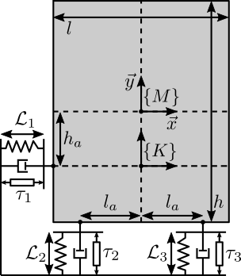
Figure 29: Model of the gravimeter
The parameters are defined as follows:
l = 1.0; % Length of the mass [m] h = 2*1.7; % Height of the mass [m] la = l/2; % Position of Act. [m] ha = h/2; % Position of Act. [m] m = 400; % Mass [kg] I = 115; % Inertia [kg m^2] c1 = 2e1; % Actuator Damping [N/(m/s)] c2 = 2e1; % Actuator Damping [N/(m/s)] c3 = 2e1; % Actuator Damping [N/(m/s)] k1 = 15e3; % Actuator Stiffness [N/m] k2 = 15e3; % Actuator Stiffness [N/m] k3 = 15e3; % Actuator Stiffness [N/m]
Let’s express \({}^Mb_i\) and \(\hat{s}_i\):
\begin{align} {}^Mb_1 &= [-l/2,\ -h_a] \\ {}^Mb_2 &= [-la, \ -h/2] \\ {}^Mb_3 &= [ la, \ -h/2] \end{align} \begin{align} \hat{s}_1 &= [1,\ 0] \\ \hat{s}_2 &= [0,\ 1] \\ \hat{s}_3 &= [0,\ 1] \end{align}s1 = [1;0]; s2 = [0;1]; s3 = [0;1]; Mb1 = [-l/2;-ha]; Mb2 = [-la; -h/2]; Mb3 = [ la; -h/2];
Frame \(\{K\}\) is chosen such that the stiffness matrix is diagonal (explained in Section 4).
The positions \({}^Kb_i\) are then:
\begin{align} {}^Kb_1 &= [-l/2,\ 0] \\ {}^Kb_2 &= [-la, \ -h/2+h_a] \\ {}^Kb_3 &= [ la, \ -h/2+h_a] \end{align}Kb1 = [-l/2; 0]; Kb2 = [-la; -h/2+ha]; Kb3 = [ la; -h/2+ha];
2.2 The Jacobian Matrix
Let’s note:
\(\bm{\mathcal{L}}\) the vector of actuator displacement:
\begin{equation} \bm{\mathcal{L}} = \begin{bmatrix} \mathcal{L}_1 \\ \mathcal{L}_2 \\ \mathcal{L}_3 \end{bmatrix} \end{equation}\(\bm{\tau}\) the vector of actuator forces:
\begin{equation} \bm{\tau} = \begin{bmatrix} \tau_1 \\ \tau_2 \\ \tau_3 \end{bmatrix} \end{equation}\(\bm{\mathcal{F}}_{\{O\}}\) the vector of forces/torques applied on the payload on expressed in frame \(\{O\}\):
\begin{equation} \bm{\mathcal{F}}_{\{O\}} = \begin{bmatrix} \mathcal{F}_{\{O\},x} \\ \mathcal{F}_{\{O\},y} \\ \mathcal{M}_{\{O\},z} \end{bmatrix} \end{equation}\(\bm{\mathcal{X}}_{\{O\}}\) the vector of displacement of the payload with respect to frame \(\{O\}\):
\begin{equation} \bm{\mathcal{X}}_{\{O\}} = \begin{bmatrix} \mathcal{X}_{\{O\},x} \\ \mathcal{X}_{\{O\},y} \\ \mathcal{X}_{\{O\},R_z} \end{bmatrix} \end{equation}
The Jacobian matrix can be used to:
- Convert joints velocity \(\dot{\mathcal{L}}\) to payload velocity and angular velocity \(\dot{\bm{\mathcal{X}}}_{\{O\}}\): \[ \dot{\bm{\mathcal{X}}}_{\{O\}} = J_{\{O\}} \dot{\bm{\mathcal{L}}} \]
- Convert actuators forces \(\bm{\tau}\) to forces/torque applied on the payload \(\bm{\mathcal{F}}_{\{O\}}\): \[ \bm{\mathcal{F}}_{\{O\}} = J_{\{O\}}^T \bm{\tau} \]
with \(\{O\}\) any chosen frame.
If we consider small displacements, we have an approximate relation that links the displacements (instead of velocities):
\begin{equation} \bm{\mathcal{X}}_{\{M\}} = J_{\{M\}} \bm{\mathcal{L}} \end{equation}The Jacobian can be computed as follows:
\begin{equation} J_{\{O\}} = \begin{bmatrix} {}^O\hat{s}_1^T & {}^Ob_{1,x} {}^O\hat{s}_{1,y} - {}^Ob_{1,x} {}^O\hat{s}_{1,y} \\ {}^O\hat{s}_2^T & {}^Ob_{2,x} {}^O\hat{s}_{2,y} - {}^Ob_{2,x} {}^O\hat{s}_{2,y} \\ \vdots & \vdots \\ {}^O\hat{s}_n^T & {}^Ob_{n,x} {}^O\hat{s}_{n,y} - {}^Ob_{n,x} {}^O\hat{s}_{n,y} \\ \end{bmatrix} \end{equation}Let’s compute the Jacobian matrix in frame \(\{M\}\) and \(\{K\}\):
Jm = [s1', Mb1(1)*s1(2)-Mb1(2)*s1(1); s2', Mb2(1)*s2(2)-Mb2(2)*s2(1); s3', Mb3(1)*s3(2)-Mb3(2)*s3(1)];
| 1 | 0 | 1.7 |
| 0 | 1 | -0.5 |
| 0 | 1 | 0.5 |
Jk = [s1', Kb1(1)*s1(2)-Kb1(2)*s1(1); s2', Kb2(1)*s2(2)-Kb2(2)*s2(1); s3', Kb3(1)*s3(2)-Kb3(2)*s3(1)];
| 1 | 0 | 0 |
| 0 | 1 | -0.5 |
| 0 | 1 | 0.5 |
In the frame \(\{M\}\), the Jacobian is:
\begin{equation} J_{\{M\}} = \begin{bmatrix} 1 & 0 & h_a \\ 0 & 1 & -l_a \\ 0 & 1 & l_a \end{bmatrix} \end{equation}And in frame \(\{K\}\), the Jacobian is:
\begin{equation} J_{\{K\}} = \begin{bmatrix} 1 & 0 & 0 \\ 0 & 1 & -l_a \\ 0 & 1 & l_a \end{bmatrix} \end{equation}2.3 The Stiffness Matrix
For a parallel manipulator, the stiffness matrix expressed in a frame \(\{O\}\) is:
\begin{equation} K_{\{O\}} = J_{\{O\}}^T \mathcal{K} J_{\{O\}} \end{equation}where:
- \(J_{\{O\}}\) is the Jacobian matrix expressed in frame \(\{O\}\)
\(\mathcal{K}\) is a diagonal matrix with the strut stiffnesses on the diagonal
\begin{equation} \mathcal{K} = \begin{bmatrix} k_1 & & & 0 \\ & k_2 & & \\ & & \ddots & \\ 0 & & & k_n \end{bmatrix} \end{equation}
We have the same thing for the damping matrix.
Kr = diag([k1,k2,k3]); Cr = diag([c1,c2,c3]);
2.4 Equations of motion - Frame of the legs
Applying the second Newton’s law on the system in Figure 29 at its center of mass \(O_M\), we obtain:
\begin{equation} \left( M_{\{M\}} s^2 + K_{\{M\}} \right) \bm{\mathcal{X}}_{\{M\}} = \bm{\mathcal{F}}_{\{M\}} \end{equation}with:
- \(M_{\{M\}}\) is the mass matrix expressed in \(\{M\}\): \[ M_{\{M\}} = \begin{bmatrix}m & 0 & 0 \\ 0 & m & 0 \\ 0 & 0 & I\end{bmatrix} \]
- \(K_{\{M\}}\) is the stiffness matrix expressed in \(\{M\}\): \[ K_{\{M\}} = J_{\{M\}}^T \mathcal{K} J_{\{M\}} \]
- \(\bm{\mathcal{X}}_{\{M\}}\) are displacements/rotations of the mass \(x\), \(y\), \(R_z\) expressed in the frame \(\{M\}\)
- \(\bm{\mathcal{F}}_{\{M\}}\) are forces/torques \(\mathcal{F}_x\), \(\mathcal{F}_y\), \(\mathcal{M}_z\) applied at the origin of \(\{M\}\)
Let’s use the Jacobian matrix to compute the equations in terms of actuator forces \(\bm{\tau}\) and strut displacement \(\bm{\mathcal{L}}\):
\begin{equation} \left( M_{\{M\}} s^2 + K_{\{M\}} \right) J_{\{M\}}^{-1} \bm{\mathcal{L}} = J_{\{M\}}^T \bm{\tau} \end{equation}And we obtain:
\begin{equation} \left( J_{\{M\}}^{-T} M_{\{M\}} J_{\{M\}}^{-1} s^2 + \mathcal{K} \right) \bm{\mathcal{L}} = \bm{\tau} \end{equation}The transfer function \(\bm{G}(s)\) from \(\bm{\tau}\) to \(\bm{\mathcal{L}}\) is:
\begin{equation} \boxed{\bm{G}(s) = {\left( J_{\{M\}}^{-T} M_{\{M\}} J_{\{M\}}^{-1} s^2 + \mathcal{K} \right)}^{-1}} \end{equation}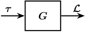
Figure 30: Block diagram of the transfer function from \(\bm{\tau}\) to \(\bm{\mathcal{L}}\)
%% Mass Matrix in frame {M}
Mm = diag([m,m,I]);
Let’s note the mass matrix in the frame of the legs:
\begin{equation} M_{\{L\}} = J_{\{M\}}^{-T} M_{\{M\}} J_{\{M\}}^{-1} \end{equation}%% Mass Matrix in the frame of the struts Ml = inv(Jm')*Mm*inv(Jm);
| 400 | 680 | -680 |
| 680 | 1371 | -1171 |
| -680 | -1171 | 1371 |
As we can see, the Stiffness matrix in the frame of the legs is diagonal. This means the plant dynamics will be diagonal at low frequency.
Kl = diag([k1, k2, k3]);
| 15000 | 0 | 0 |
| 0 | 15000 | 0 |
| 0 | 0 | 15000 |
Cl = diag([c1, c2, c3]);
The transfer function \(\bm{G}(s)\) from \(\bm{\tau}\) to \(\bm{\mathcal{L}}\) is defined below and its magnitude is shown in Figure 31.
Gl = inv(Ml*s^2 + Cl*s + Kl);
We can indeed see that the system is well decoupled at low frequency.
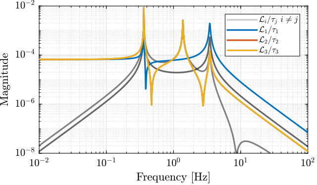
Figure 31: Dynamics from \(\bm{\tau}\) to \(\bm{\mathcal{L}}\)
2.5 Equations of motion - “Center of mass” {M}
The equations of motion expressed in frame \(\{M\}\) are:
\begin{equation} \left( M_{\{M\}} s^2 + K_{\{M\}} \right) \bm{\mathcal{X}}_{\{M\}} = \bm{\mathcal{F}}_{\{M\}} \end{equation}And the plant from \(\bm{F}_{\{M\}}\) to \(\bm{\mathcal{X}}_{\{M\}}\) is:
\begin{equation} \boxed{\bm{G}_{\{X\}} = {\left( M_{\{M\}} s^2 + K_{\{M\}} \right)}^{-1}} \end{equation}with:
- \(M_{\{M\}}\) is the mass matrix expressed in \(\{M\}\): \[ M_{\{M\}} = \begin{bmatrix}m & 0 & 0 \\ 0 & m & 0 \\ 0 & 0 & I\end{bmatrix} \]
- \(K_{\{M\}}\) is the stiffness matrix expressed in \(\{M\}\): \[ K_{\{M\}} = J_{\{M\}}^T \mathcal{K} J_{\{M\}} \]
Figure 32: Block diagram of the transfer function from \(\bm{\mathcal{F}}_{\{M\}}\) to \(\bm{\mathcal{X}}_{\{M\}}\)
%% Mass Matrix in frame {M}
Mm = diag([m,m,I]);
| 400 | 0 | 0 |
| 0 | 400 | 0 |
| 0 | 0 | 115 |
%% Stiffness Matrix in frame {M} Km = Jm'*Kr*Jm;
| 15000 | 0 | 25500 |
| 0 | 30000 | 0 |
| 25500 | 0 | 50850 |
%% Damping Matrix in frame {M} Cm = Jm'*Cr*Jm;
The plant from \(\bm{F}_{\{M\}}\) to \(\bm{\mathcal{X}}_{\{M\}}\) is defined below and its magnitude is shown in Figure 33.
%% Plant in frame {M} Gm = inv(Mm*s^2 + Cm*s + Km);
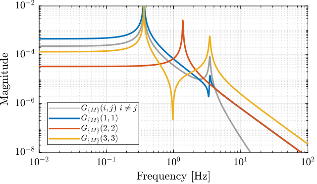
Figure 33: Dynamics from \(\bm{\mathcal{F}}_{\{M\}}\) to \(\bm{\mathcal{X}}_{\{M\}}\)
2.6 Equations of motion - “Center of stiffness” {K}
Let’s now express the transfer function from \(\bm{\mathcal{F}}_{\{K\}}\) to \(\bm{\mathcal{X}}_{\{K\}}\). We start from:
\begin{equation} \left( M_{\{M\}} s^2 + K_{\{M\}} \right) J_{\{M\}}^{-1} \bm{\mathcal{L}} = J_{\{M\}}^T \bm{\tau} \end{equation}And we make use of the Jacobian \(J_{\{K\}}\) to obtain:
\begin{equation} \left( M_{\{M\}} s^2 + K_{\{M\}} \right) J_{\{M\}}^{-1} J_{\{K\}} \bm{\mathcal{X}}_{\{K\}} = J_{\{M\}}^T J_{\{K\}}^{-T} \bm{\mathcal{F}}_{\{K\}} \end{equation}And finally:
\begin{equation} \left( J_{\{K\}}^T J_{\{M\}}^{-T} M_{\{M\}} J_{\{M\}}^{-1} J_{\{K\}} s^2 + J_{\{K\}}^T \mathcal{K} J_{\{K\}} \right) \bm{\mathcal{X}}_{\{K\}} = \bm{\mathcal{F}}_{\{K\}} \end{equation}The transfer function from \(\bm{\mathcal{F}}_{\{K\}}\) to \(\bm{\mathcal{X}}_{\{K\}}\) is then:
\begin{equation} \boxed{\bm{G}_{\{K\}} = {\left( J_{\{K\}}^T J_{\{M\}}^{-T} M_{\{M\}} J_{\{M\}}^{-1} J_{\{K\}} s^2 + J_{\{K\}}^T \mathcal{K} J_{\{K\}} \right)}^{-1}} \end{equation}The frame \(\{K\}\) has been chosen such that \(J_{\{K\}}^T \mathcal{K} J_{\{K\}}\) is diagonal.
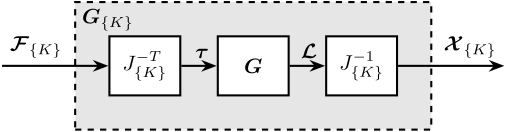
Figure 34: Block diagram of the transfer function from \(\bm{\mathcal{F}}_{\{K\}}\) to \(\bm{\mathcal{X}}_{\{K\}}\)
Mk = Jk'*inv(Jm)'*Mm*inv(Jm)*Jk;
| 400 | 0 | -680 |
| 0 | 400 | 0 |
| -680 | 0 | 1271 |
Kk = Jk'*Kr*Jk;
| 15000 | 0 | 0 |
| 0 | 30000 | 0 |
| 0 | 0 | 7500 |
The plant from \(\bm{F}_{\{K\}}\) to \(\bm{\mathcal{X}}_{\{K\}}\) is defined below and its magnitude is shown in Figure 35.
Gk = inv(Mk*s^2 + Ck*s + Kk);
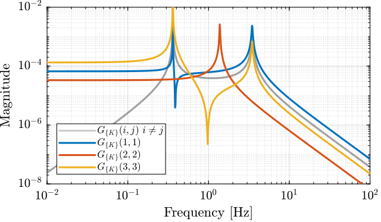
Figure 35: Dynamics from \(\bm{\mathcal{F}}_{\{K\}}\) to \(\bm{\mathcal{X}}_{\{K\}}\)
3 SVD / Jacobian / Model decoupling comparison
The goal of this section is to compare the use of several methods for the decoupling of parallel manipulators.
It is structured as follow:
- Section 3.1: the model used to compare/test decoupling strategies is presented
- Section 3.2: decoupling using Jacobian matrices is presented
- Section 3.3: modal decoupling is presented
- Section 3.4: SVD decoupling is presented
- Section 3.5: the three decoupling methods are applied on the test model and compared
- Section 3.7: conclusions are drawn on the three decoupling methods
3.1 Test Model
Let’s consider a parallel manipulator with several collocated actuator/sensors pairs.
System in Figure 36 will serve as an example.
We will note:
- \(b_i\): location of the joints on the top platform
- \(\hat{s}_i\): unit vector corresponding to the struts direction
- \(k_i\): stiffness of the struts
- \(\tau_i\): actuator forces
- \(O_M\): center of mass of the solid body
- \(\mathcal{L}_i\): relative displacement of the struts
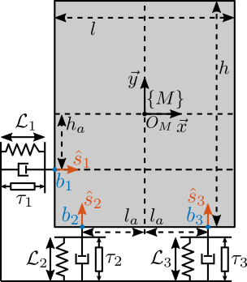
Figure 36: Model use to compare decoupling techniques
The parameters are defined below.
%% System parameters l = 1.0; % Length of the mass [m] h = 2*1.7; % Height of the mass [m] la = l/2; % Position of Act. [m] ha = h/2; % Position of Act. [m] m = 400; % Mass [kg] I = 115; % Inertia [kg m^2] %% Actuator Damping [N/(m/s)] c1 = 2e1; c2 = 2e1; c3 = 2e1; %% Actuator Stiffness [N/m] k1 = 15e3; k2 = 15e3; k3 = 15e3; %% Unit vectors of the actuators s1 = [1;0]; s2 = [0;1]; s3 = [0;1]; %% Location of the joints Mb1 = [-l/2;-ha]; Mb2 = [-la; -h/2]; Mb3 = [ la; -h/2]; %% Jacobian matrix J = [s1', Mb1(1)*s1(2)-Mb1(2)*s1(1); s2', Mb2(1)*s2(2)-Mb2(2)*s2(1); s3', Mb3(1)*s3(2)-Mb3(2)*s3(1)]; %% Stiffnesss and Damping matrices of the struts Kr = diag([k1,k2,k3]); Cr = diag([c1,c2,c3]);
%% Mass Matrix in frame {M} M = diag([m,m,I]); %% Stiffness Matrix in frame {M} K = J'*Kr*J; %% Damping Matrix in frame {M} C = J'*Cr*J;
The plant from \(\bm{\tau}\) to \(\bm{\mathcal{L}}\) is defined below
%% Plant in frame {M} G = J*inv(M*s^2 + C*s + K)*J';
The magnitude of the coupled plant \(G\) is shown in Figure 37.
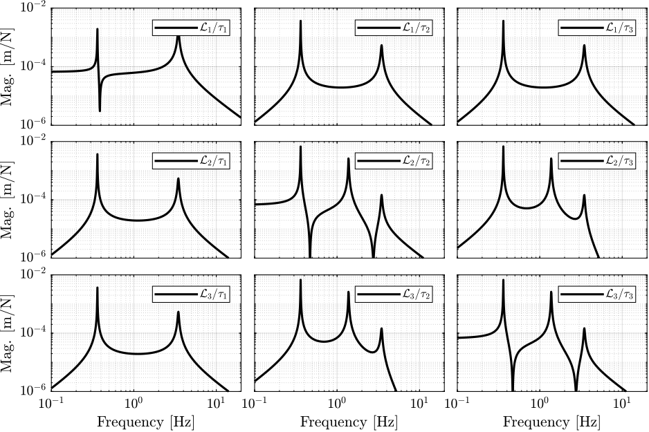
Figure 37: Magnitude of the coupled plant.
3.2 Jacobian Decoupling
The Jacobian matrix can be used to:
- Convert joints velocity \(\dot{\mathcal{L}}\) to payload velocity and angular velocity \(\dot{\bm{\mathcal{X}}}_{\{O\}}\): \[ \dot{\bm{\mathcal{X}}}_{\{O\}} = J_{\{O\}} \dot{\bm{\mathcal{L}}} \]
- Convert actuators forces \(\bm{\tau}\) to forces/torque applied on the payload \(\bm{\mathcal{F}}_{\{O\}}\): \[ \bm{\mathcal{F}}_{\{O\}} = J_{\{O\}}^T \bm{\tau} \]
with \(\{O\}\) any chosen frame.
By wisely choosing frame \(\{O\}\), we can obtain nice decoupling for plant:
\begin{equation} \bm{G}_{\{O\}} = J_{\{O\}}^{-1} \bm{G} J_{\{O\}}^{-T} \end{equation}The obtained plan corresponds to forces/torques applied on origin of frame \(\{O\}\) to the translation/rotation of the payload expressed in frame \(\{O\}\).
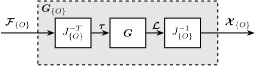
Figure 38: Block diagram of the transfer function from \(\bm{\mathcal{F}}_{\{O\}}\) to \(\bm{\mathcal{X}}_{\{O\}}\)
The Jacobian matrix is only based on the geometry of the system and does not depend on the physical properties such as mass and stiffness.
The inputs and outputs of the decoupled plant \(\bm{G}_{\{O\}}\) have physical meaning:
- \(\bm{\mathcal{F}}_{\{O\}}\) are forces/torques applied on the payload at the origin of frame \(\{O\}\)
- \(\bm{\mathcal{X}}_{\{O\}}\) are translations/rotation of the payload expressed in frame \(\{O\}\)
It is then easy to include a reference tracking input that specify the wanted motion of the payload in the frame \(\{O\}\).
3.3 Modal Decoupling
Let’s consider a system with the following equations of motion:
\begin{equation} M \bm{\ddot{x}} + C \bm{\dot{x}} + K \bm{x} = \bm{\mathcal{F}} \end{equation}And the measurement output is a combination of the motion variable \(\bm{x}\):
\begin{equation} \bm{y} = C_{ox} \bm{x} + C_{ov} \dot{\bm{x}} \end{equation}Let’s make a change of variables:
\begin{equation} \boxed{\bm{x} = \Phi \bm{x}_m} \end{equation}with:
- \(\bm{x}_m\) the modal amplitudes
- \(\Phi\) a matrix whose columns are the modes shapes of the system
And we map the actuator forces:
\begin{equation} \bm{\mathcal{F}} = J^T \bm{\tau} \end{equation}The equations of motion become:
\begin{equation} M \Phi \bm{\ddot{x}}_m + C \Phi \bm{\dot{x}}_m + K \Phi \bm{x}_m = J^T \bm{\tau} \end{equation}And the measured output is:
\begin{equation} \bm{y} = C_{ox} \Phi \bm{x}_m + C_{ov} \Phi \dot{\bm{x}}_m \end{equation}By pre-multiplying the EoM by \(\Phi^T\):
\begin{equation} \Phi^T M \Phi \bm{\ddot{x}}_m + \Phi^T C \Phi \bm{\dot{x}}_m + \Phi^T K \Phi \bm{x}_m = \Phi^T J^T \bm{\tau} \end{equation}And we note:
- \(M_m = \Phi^T M \Phi = \text{diag}(\mu_i)\) the modal mass matrix
- \(C_m = \Phi^T C \Phi = \text{diag}(2 \xi_i \mu_i \omega_i)\) (classical damping)
- \(K_m = \Phi^T K \Phi = \text{diag}(\mu_i \omega_i^2)\) the modal stiffness matrix
And we have:
\begin{equation} \ddot{\bm{x}}_m + 2 \Xi \Omega \dot{\bm{x}}_m + \Omega^2 \bm{x}_m = \mu^{-1} \Phi^T J^T \bm{\tau} \end{equation}with:
- \(\mu = \text{diag}(\mu_i)\)
- \(\Omega = \text{diag}(\omega_i)\)
- \(\Xi = \text{diag}(\xi_i)\)
And we call the modal input matrix:
\begin{equation} \boxed{B_m = \mu^{-1} \Phi^T J^T} \end{equation}And the modal output matrices:
\begin{equation} \boxed{C_m = C_{ox} \Phi + C_{ov} \Phi s} \end{equation}Let’s note the “modal input”:
\begin{equation} \bm{\tau}_m = B_m \bm{\tau} \end{equation}The transfer function from \(\bm{\tau}_m\) to \(\bm{x}_m\) is:
\begin{equation} \label{eq:modal_eq} \boxed{\frac{\bm{x}_m}{\bm{\tau}_m} = \left( I_n s^2 + 2 \Xi \Omega s + \Omega^2 \right)^{-1}} \end{equation}which is a diagonal transfer function matrix. We therefore have decoupling of the dynamics from \(\bm{\tau}_m\) to \(\bm{x}_m\).
We now expressed the transfer function from input \(\bm{\tau}\) to output \(\bm{y}\) as a function of the “modal variables”:
\begin{equation} \boxed{\frac{\bm{y}}{\bm{\tau}} = \underbrace{\left( C_{ox} + s C_{ov} \right) \Phi}_{C_m} \underbrace{\left( I_n s^2 + 2 \Xi \Omega s + \Omega^2 \right)^{-1}}_{\text{diagonal}} \underbrace{\left( \mu^{-1} \Phi^T J^T \right)}_{B_m}} \end{equation}By inverting \(B_m\) and \(C_m\) and using them as shown in Figure 39, we can see that we control the system in the “modal space” in which it is decoupled.
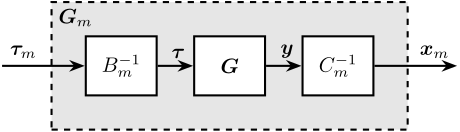
Figure 39: Modal Decoupling Architecture
The system \(\bm{G}_m(s)\) shown in Figure 39 is diagonal \eqref{eq:modal_eq}.
Modal decoupling requires to have the equations of motion of the system. From the equations of motion (and more precisely the mass and stiffness matrices), the mode shapes \(\Phi\) are computed.
Then, the system can be decoupled in the modal space. The obtained system on the diagonal are second order resonant systems which can be easily controlled.
Using this decoupling strategy, it is possible to control each mode individually.
3.4 SVD Decoupling
Procedure:
- Identify the dynamics of the system from inputs to outputs (can be obtained experimentally)
- Choose a frequency where we want to decouple the system (usually, the crossover frequency is a good choice)
%% Decoupling frequency [rad/s] wc = 2*pi*10; %% System's response at the decoupling frequency H1 = evalfr(G, j*wc);
- Compute a real approximation of the system’s response at that frequency
%% Real approximation of G(j.wc) D = pinv(real(H1'*H1)); H1 = pinv(D*real(H1'*diag(exp(j*angle(diag(H1*D*H1.'))/2))));
- Perform a Singular Value Decomposition of the real approximation
[U,S,V] = svd(H1);
- Use the singular input and output matrices to decouple the system as shown in Figure 40 \[ G_{svd}(s) = U^{-1} G(s) V^{-T} \]
Gsvd = inv(U)*G*inv(V');
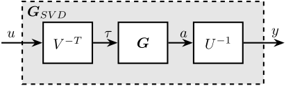
Figure 40: Decoupled plant \(\bm{G}_{SVD}\) using the Singular Value Decomposition
In order to apply the Singular Value Decomposition, we need to have the Frequency Response Function of the system, at least near the frequency where we wish to decouple the system. The FRF can be experimentally obtained or based from a model.
This method ensure good decoupling near the chosen frequency, but no guaranteed decoupling away from this frequency.
Also, it depends on how good the real approximation of the FRF is, therefore it might be less good for plants with high damping.
This method is quite general and can be applied to any type of system. The inputs and outputs are ordered from higher gain to lower gain at the chosen frequency.
[ ]Do we loose any physical meaning of the obtained inputs and outputs?[ ]Can we take advantage of the fact that U and V are unitary?
3.5 Comparison
3.5.1 Jacobian Decoupling
Decoupling properties depends on the chosen frame \(\{O\}\).
Let’s take the CoM as the decoupling frame.
Gx = pinv(J)*G*pinv(J'); Gx.InputName = {'Fx', 'Fy', 'Mz'}; Gx.OutputName = {'Dx', 'Dy', 'Rz'};
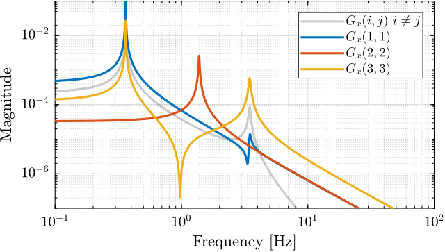
Figure 41: Plant decoupled using the Jacobian matrices \(G_x(s)\)
3.5.2 Modal Decoupling
For the system in Figure 36, we have:
\begin{align} \bm{x} &= \begin{bmatrix} x \\ y \\ R_z \end{bmatrix} \\ \bm{y} &= \mathcal{L} = J \bm{x}; \quad C_{ox} = J; \quad C_{ov} = 0 \\ M &= \begin{bmatrix} m & 0 & 0 \\ 0 & m & 0 \\ 0 & 0 & I \end{bmatrix}; \quad K = J' \begin{bmatrix} k & 0 & 0 \\ 0 & k & 0 \\ 0 & 0 & k \end{bmatrix} J; \quad C = J' \begin{bmatrix} c & 0 & 0 \\ 0 & c & 0 \\ 0 & 0 & c \end{bmatrix} J \end{align}In order to apply the architecture shown in Figure 39, we need to compute \(C_{ox}\), \(C_{ov}\), \(\Phi\), \(\mu\) and \(J\).
%% Modal Decomposition [V,D] = eig(M\K); %% Modal Mass Matrix mu = V'*M*V; %% Modal output matrix Cm = J*V; %% Modal input matrix Bm = inv(mu)*V'*J';
| -0.0004 | -0.0007 | 0.0007 |
| -0.0151 | 0.0041 | -0.0041 |
| 0.0 | 0.0025 | 0.0025 |
| -0.1 | -1.8 | 0.0 |
| -0.2 | 0.5 | 1.0 |
| 0.2 | -0.5 | 1.0 |
And the plant in the modal space is defined below and its magnitude is shown in Figure 42.
Gm = inv(Cm)*G*inv(Bm);
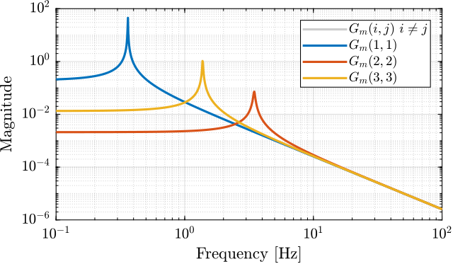
Figure 42: Modal plant \(G_m(s)\)
Let’s now close one loop at a time and see how the transmissibility changes.
3.5.3 SVD Decoupling
%% Decoupling frequency [rad/s] wc = 2*pi*10; %% System's response at the decoupling frequency H1 = evalfr(G, j*wc); %% Real approximation of G(j.wc) D = pinv(real(H1'*H1)); H1 = pinv(D*real(H1'*diag(exp(j*angle(diag(H1*D*H1.'))/2)))); [U,S,V] = svd(H1); Gsvd = inv(U)*G*inv(V');
| -8e-06 | 2.1e-06 | -2.1e-06 |
| 2.1e-06 | -1.3e-06 | -2.5e-08 |
| -2.1e-06 | -2.5e-08 | -1.3e-06 |
[ ]Do we have something special when applying SVD to a collocated MIMO system?- When applying SVD on a non-collocated MIMO system, we obtained a decoupled plant looking like the one in Figure 8
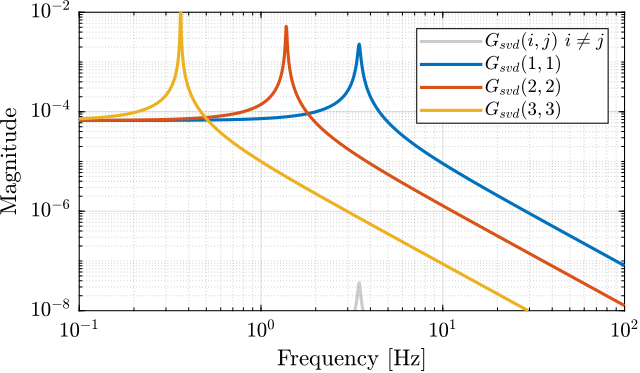
Figure 43: Svd plant \(G_m(s)\)
3.6 Robustness of the decoupling strategies?
What happens if we add an additional resonance in the system (Figure 44).
Having less actuator than DoF (under-actuated system):
- modal decoupling: can still control first \(n\) modes?
- SVD decoupling: does not matter
- Jacobian decoupling: could give poor decoupling?
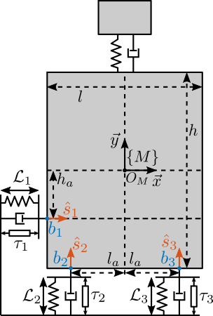
Figure 44: Plant with spurious resonance (additional DoF)
3.6.1 Plant
A multi body model of the system in Figure 44 has been made using Simscape.
Its parameters are defined below:
leq = 20e-3; % Equilibrium length of struts [m] mr = 5; % [kg] kr = (2*pi*10)^2*mr; % Stiffness [N/m] cr = 1e1; % Damping [N/(m/s)] m = 400 - mr; % Mass [kg]
The plant is then identified and shown in Figure 45. The added resonance only slightly modifies the plant around 10Hz.

Figure 45: Magnitude of the coupled plant without additional mode (solid) and with the additional mode (dashed).
3.6.2 Jacobian Decoupling
The obtained plant is decoupled using the Jacobian matrix.
Gxr = pinv(J)*Gr*pinv(J'); Gxr.InputName = {'Fx', 'Fy', 'Mz'}; Gxr.OutputName = {'Dx', 'Dy', 'Rz'};
The obtained plant is shown in Figure 46 and is not much different than for the plant without the spurious resonance.
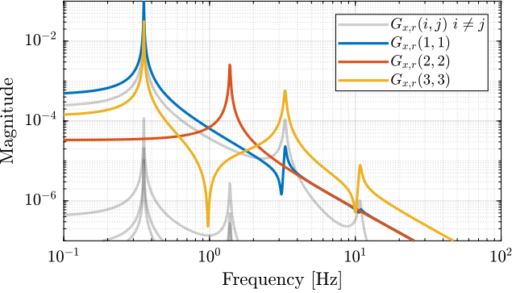
Figure 46: Plant with spurious resonance decoupled using the Jacobian matrices \(G_{x,r}(s)\)
3.6.3 Modal Decoupling
The obtained plant is now decoupled using the modal matrices obtained with the plant not including the added resonance.
Gmr = inv(Cm)*Gr*inv(Bm);
The obtained decoupled plant is shown in Figure 47. Compare to the decoupled plant in Figure 42, the added resonance induces some coupling, especially around the frequency of the added spurious resonance.
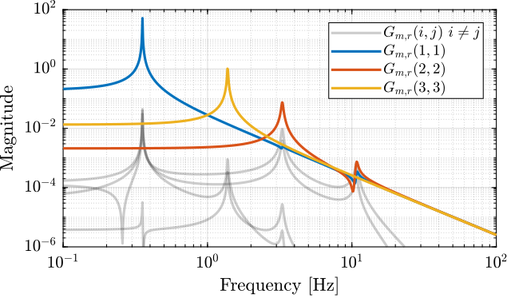
Figure 47: Modal plant including spurious resonance \(G_{m,r}(s)\)
3.6.4 SVD Decoupling
The SVD decoupling is performed on the new obtained plant. The decoupling frequency is slightly shifted in order not to interfere too much with the spurious resonance.
%% Decoupling frequency [rad/s] wc = 2*pi*7; %% System's response at the decoupling frequency H1 = evalfr(Gr, j*wc); %% Real approximation of G(j.wc) D = pinv(real(H1'*H1)); H1 = pinv(D*real(H1'*diag(exp(j*angle(diag(H1*D*H1.'))/2)))); [U,S,V] = svd(H1); Gsvdr = inv(U)*Gr*inv(V');
The obtained plant is shown in Figure 48.
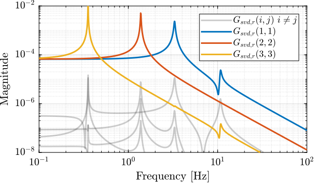
Figure 48: SVD decoupled plant including a spurious resonance \(G_{svd,r}(s)\)
3.7 Conclusion
The three proposed methods clearly have a lot in common as they all tend to make system more decoupled by pre and/or post multiplying by a constant matrix However, the three methods also differs by a number of points which are summarized in Table 15.
Other decoupling strategies could be included in this study, such as:
- DC decoupling: pre-multiply the plant by \(G(0)^{-1}\)
- full decoupling: pre-multiply the plant by \(G(s)^{-1}\)
| Jacobian | Modal | SVD | |
|---|---|---|---|
| Philosophy | Topology Driven | Physics Driven | Data Driven |
| Requirements | Known geometry | Known equations of motion | Identified FRF |
| Decoupling Matrices | Decoupling using \(J\) obtained from geometry | Decoupling using \(\Phi\) obtained from modal decomposition | Decoupling using \(U\) and \(V\) obtained from SVD |
| Decoupled Plant | \(\bm{G}_{\{O\}} = J_{\{O\}}^{-1} \bm{G} J_{\{O\}}^{-T}\) | \(\bm{G}_m = C_m^{-1} \bm{G} B_m^{-1}\) | \(\bm{G}_{svd}(s) = U^{-1} \bm{G}(s) V^{-T}\) |
| Implemented Controller | \(\bm{K}_{\{O\}} = J_{\{O\}}^{-T} \bm{K}_{d}(s) J_{\{O\}}^{-1}\) | \(\bm{K}_m = B_m^{-1} \bm{K}_{d}(s) C_m^{-1}\) | \(\bm{K}_{svd}(s) = V^{-T} \bm{K}_{d}(s) U^{-1}\) |
| Physical Interpretation | Forces/Torques to Displacement/Rotation in chosen frame | Inputs to excite individual modes | Directions of max to min controllability/observability |
| Output to sense individual modes | |||
| Decoupling Properties | Decoupling at low or high frequency depending on the chosen frame | Good decoupling at all frequencies | Good decoupling near the chosen frequency |
| Pros | Physical inputs / outputs | Target specific modes | Good Decoupling near the crossover |
| Good decoupling at High frequency (diagonal mass matrix if Jacobian taken at the CoM) | 2nd order diagonal plant | Very General | |
| Good decoupling at Low frequency (if Jacobian taken at specific point) | |||
| Easy integration of meaningful reference inputs | |||
| Cons | Coupling between force/rotation may be high at low frequency (non diagonal terms in K) | Need analytical equations | Loose the physical meaning of inputs /outputs |
| Limited to parallel mechanisms (?) | Decoupling depends on the real approximation validity | ||
| If good decoupling at all frequencies => requires specific mechanical architecture | Diagonal plants may not be easy to control | ||
| Applicability | Parallel Mechanisms | Systems whose dynamics that can be expressed with M and K matrices | Very general |
| Only small motion for the Jacobian matrix to stay constant | Need FRF data (either experimentally or analytically) |
4 Diagonal Stiffness Matrix for a planar manipulator
4.1 Model and Assumptions
Consider a parallel manipulator with:
- \(b_i\): location of the joints on the top platform are called \(b_i\)
- \(\hat{s}_i\): unit vector corresponding to the struts
- \(k_i\): stiffness of the struts
- \(\tau_i\): actuator forces
- \(O_M\): center of mass of the solid body
Consider two frames:
- \(\{M\}\) with origin \(O_M\)
- \(\{K\}\) with origin \(O_K\)
As an example, take the system shown in Figure 49.
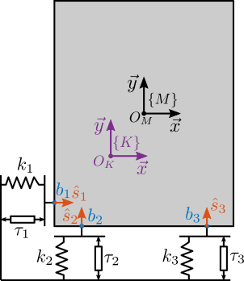
Figure 49: Example of 3DoF parallel platform
4.2 Objective
The objective is to find conditions for the existence of a frame \(\{K\}\) in which the Stiffness matrix of the manipulator is diagonal. If the conditions are fulfilled, a second objective is to fine the location of the frame \(\{K\}\) analytically.
4.3 Conditions for Diagonal Stiffness
The stiffness matrix in the frame \(\{K\}\) can be expressed as:
\begin{equation} \label{eq:stiffness_formula_planar} K_{\{K\}} = J_{\{K\}}^T \mathcal{K} J_{\{K\}} \end{equation}where:
- \(J_{\{K\}}\) is the Jacobian transformation from the struts to the frame \(\{K\}\)
\(\mathcal{K}\) is a diagonal matrix with the strut stiffnesses on the diagonal
\begin{equation} \mathcal{K} = \begin{bmatrix} k_1 & & & 0 \\ & k_2 & & \\ & & \ddots & \\ 0 & & & k_n \end{bmatrix} \end{equation}
The Jacobian for a planar manipulator, evaluated in a frame \(\{K\}\), can be expressed as follows:
\begin{equation} \label{eq:jacobian_planar} J_{\{K\}} = \begin{bmatrix} {}^K\hat{s}_1^T & {}^Kb_{1,x} {}^K\hat{s}_{1,y} - {}^Kb_{1,x} {}^K\hat{s}_{1,y} \\ {}^K\hat{s}_2^T & {}^Kb_{2,x} {}^K\hat{s}_{2,y} - {}^Kb_{2,x} {}^K\hat{s}_{2,y} \\ \vdots & \vdots \\ {}^K\hat{s}_n^T & {}^Kb_{n,x} {}^K\hat{s}_{n,y} - {}^Kb_{n,x} {}^K\hat{s}_{n,y} \\ \end{bmatrix} \end{equation}Let’s omit the mention of frame, it is assumed that vectors are expressed in frame \(\{K\}\). It is specified otherwise.
Injecting \eqref{eq:jacobian_planar} into \eqref{eq:stiffness_formula_planar} yields:
\begin{equation} \boxed{ K_{\{K\}} = \left[ \begin{array}{c|c} k_i \hat{s}_i \hat{s}_i^T & k_i \hat{s}_i (b_{i,x}\hat{s}_{i,y} - b_{i,y}\hat{s}_{i,x}) \cr \hline k_i \hat{s}_i (b_{i,x}\hat{s}_{i,y} - b_{i,y}\hat{s}_{i,x}) & k_i (b_{i,x}\hat{s}_{i,y} - b_{i,y}\hat{s}_{i,x})^2 \end{array} \right] } \end{equation}In order to have a decoupled stiffness matrix, we have the following two conditions:
\begin{align} k_i \hat{s}_i \hat{s}_i^T &= \text{diag. matrix} \label{eq:diag_cond_2D_1} \\ k_i \hat{s}_i (b_{i,x}\hat{s}_{i,y} - b_{i,y}\hat{s}_{i,x}) &= 0 \label{eq:diag_cond_2D_2} \end{align}Note that we don’t have any condition on the term \(k_i (b_{i,x}\hat{s}_{i,y} - b_{i,y}\hat{s}_{i,x})^2\) as it is only a scalar.
Condition \eqref{eq:diag_cond_2D_1}:
- represents the coupling between translations and forces
- does only depends on the orientation of the struts and the stiffnesses and not on the choice of frame
- it is therefore a intrinsic property of the chosen geometry
Condition \eqref{eq:diag_cond_2D_2}:
- represents the coupling between forces/rotations and torques/translation
- it does depend on the positions of the joints \(b_i\) in the frame \(\{K\}\)
Let’s make a change of frame from the initial frame \(\{M\}\) to the frame \(\{K\}\):
\begin{align} {}^Kb_i &= {}^Mb_i - {}^MO_K \\ {}^K\hat{s}_i &= {}^M\hat{s}_i \end{align}And the goal is to find \({}^MO_K\) such that \eqref{eq:diag_cond_2D_2} is fulfilled:
\begin{equation} k_i ({}^Mb_{i,x}\hat{s}_{i,y} - {}^Mb_{i,y}\hat{s}_{i,x} - {}^MO_{K,x}\hat{s}_{i,y} + {}^MO_{K,y}\hat{s}_{i,x}) \hat{s}_i = 0 \end{equation} \begin{equation} k_i ({}^Mb_{i,x}\hat{s}_{i,y} - {}^Mb_{i,y}\hat{s}_{i,x}) \hat{s}_i = {}^MO_{K,x} k_i \hat{s}_{i,y} \hat{s}_i - {}^MO_{K,y} k_i \hat{s}_{i,x} \hat{s}_i \end{equation}And we have two sets of linear equations of two unknowns.
This can be easily solved by writing the equations in a matrix form:
\begin{equation} \underbrace{k_i ({}^Mb_{i,x}\hat{s}_{i,y} - {}^Mb_{i,y}\hat{s}_{i,x}) \hat{s}_i}_{2 \times 1} = \underbrace{\begin{bmatrix} & \\ k_i \hat{s}_{i,y} \hat{s}_i & - k_i \hat{s}_{i,x} \hat{s}_i \\ & \\ \end{bmatrix}}_{2 \times 2} \underbrace{\begin{bmatrix} {}^MO_{K,x}\\ {}^MO_{K,y} \end{bmatrix}}_{2 \times 1} \end{equation}And finally, if the matrix is invertible:
\begin{equation} \boxed{ {}^MO_K = {\begin{bmatrix} & \\ k_i \hat{s}_{i,y} \hat{s}_i & - k_i \hat{s}_{i,x} \hat{s}_i \\ & \\ \end{bmatrix}}^{-1} k_i ({}^Mb_{i,x}\hat{s}_{i,y} - {}^Mb_{i,y}\hat{s}_{i,x}) \hat{s}_i } \end{equation}Note that a rotation of the frame \(\{K\}\) with respect to frame \(\{M\}\) would make not change on the “diagonality” of \(K_{\{K\}}\).
4.4 Example 1 - Planar manipulator with 3 actuators
Consider system of Figure 50.
Figure 50: Example of 3DoF parallel platform
The stiffnesses \(k_i\), the joint positions \({}^Mb_i\) and joint unit vectors \({}^M\hat{s}_i\) are defined below:
ki = [5,1,2]; % Stiffnesses [N/m] si = [[1;0],[0;1],[0;1]]; si = si./vecnorm(si); % Unit Vectors bi = [[-1;0.5],[-2;-1],[0;-1]]; % Joint's positions in frame {M}
Let’s first verify that condition \eqref{eq:diag_cond_2D_1} is true:
| 5 | 0 |
| 0 | 2 |
Now, compute \({}^MO_K\):
Ok = inv([sum(ki.*si(2,:).*si, 2), -sum(ki.*si(1,:).*si, 2)])*sum(ki.*(bi(1,:).*si(2,:) - bi(2,:).*si(1,:)).*si, 2);
| -1 |
| 0.5 |
Let’s compute the new coordinates \({}^Kb_i\) after the change of frame:
Kbi = bi - Ok;
In order to verify that the new frame \(\{K\}\) indeed yields a diagonal stiffness matrix, we first compute the Jacobian \(J_{\{K\}}\):
Jk = [si', (Kbi(1,:).*si(2,:) - Kbi(2,:).*si(1,:))'];
| 1 | 0 | 0 |
| 0 | 1 | -1 |
| 0 | 1 | 1 |
And the stiffness matrix:
K = Jk'*diag(ki)*Jk
| 5 | 0 | 0 |
| 0 | 2 | 0 |
| 0 | 0 | 2 |
4.5 Example 2 - Planar manipulator with 4 actuators
Now consider the planar manipulator of Figure 51.
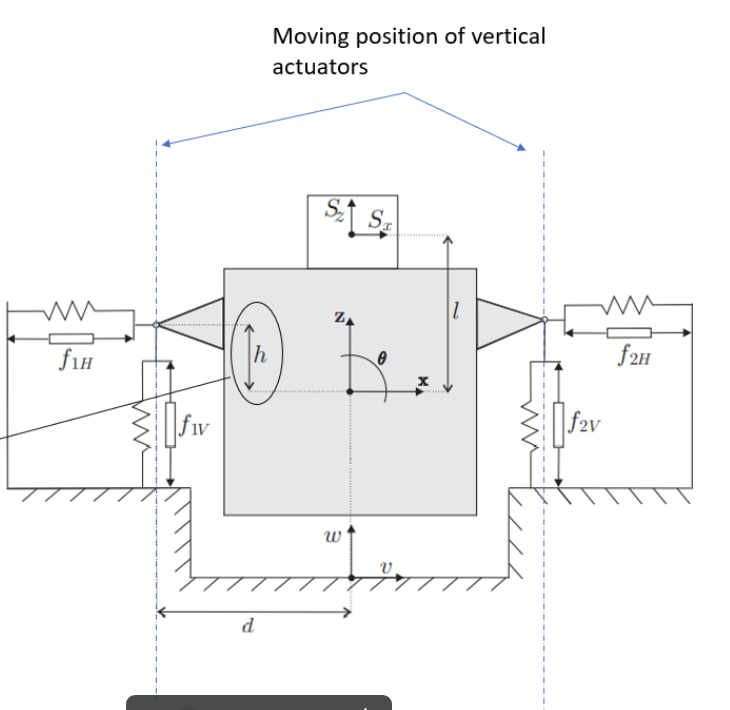
Figure 51: Planar Manipulator
The stiffnesses \(k_i\), the joint positions \({}^Mb_i\) and joint unit vectors \({}^M\hat{s}_i\) are defined below:
ki = [1,2,1,1]; si = [[1;0],[0;1],[-1;0],[0;1]]; si = si./vecnorm(si); h = 0.2; L = 2; bi = [[-L/2;h],[-L/2;-h],[L/2;h],[L/2;h]];
Let’s first verify that condition \eqref{eq:diag_cond_2D_1} is true:
ki.*si*si'
| 2 | 0 |
| 0 | 3 |
Now, compute \({}^MO_K\):
Ok = inv([sum(ki.*si(2,:).*si, 2), -sum(ki.*si(1,:).*si, 2)])*sum(ki.*(bi(1,:).*si(2,:) - bi(2,:).*si(1,:)).*si, 2);
| -0.33333 |
| 0.2 |
Let’s compute the new coordinates \({}^Kb_i\) after the change of frame:
Kbi = bi - Ok;
In order to verify that the new frame \(\{K\}\) indeed yields a diagonal stiffness matrix, we first compute the Jacobian \(J_{\{K\}}\):
Jk = [si', (Kbi(1,:).*si(2,:) - Kbi(2,:).*si(1,:))'];
| 1 | 0 | 0 |
| 0 | 1 | -0.66667 |
| -1 | 0 | 0 |
| 0 | 1 | 1.3333 |
And the stiffness matrix:
K = Jk'*diag(ki)*Jk
| 2 | 0 | 0 |
| 0 | 3 | -2.2204e-16 |
| 0 | -2.2204e-16 | 2.6667 |
5 Diagonal Stiffness Matrix for a general parallel manipulator
5.1 Model and Assumptions
Let’s consider a 6dof parallel manipulator with:
- \(b_i\): location of the joints on the top platform are called \(b_i\)
- \(\hat{s}_i\): unit vector corresponding to the struts
- \(k_i\): stiffness of the struts
- \(\tau_i\): actuator forces
- \(O_M\): center of mass of the solid body
Consider two frames:
- \(\{M\}\) with origin \(O_M\)
- \(\{K\}\) with origin \(O_K\)
An example is shown in Figure 52.
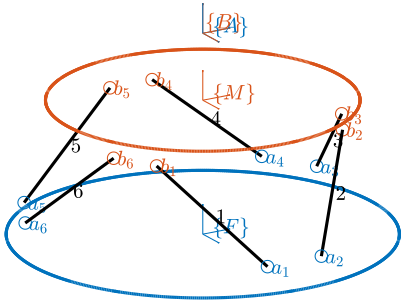
Figure 52: Parallel manipulator Example
5.2 Objective
The objective is to find conditions for the existence of a frame \(\{K\}\) in which the Stiffness matrix of the manipulator is diagonal. If the conditions are fulfilled, a second objective is to fine the location of the frame \(\{K\}\) analytically.
5.3 Analytical formula of the stiffness matrix
For a fully parallel manipulator, the stiffness matrix \(K_{\{K\}}\) expressed in a frame \(\{K\}\) is:
\begin{equation} K_{\{K\}} = J_{\{K\}}^T \mathcal{K} J_{\{K\}} \end{equation}where:
- \(J_{\{K\}}\) is the Jacobian transformation from the struts to the frame \(\{K\}\)
\(\mathcal{K}\) is a diagonal matrix with the strut stiffnesses on the diagonal:
\begin{equation} \mathcal{K} = \begin{bmatrix} k_1 & & & 0 \\ & k_2 & & \\ & & \ddots & \\ 0 & & & k_n \end{bmatrix} \end{equation}
The analytical expression of \(J_{\{K\}}\) is:
\begin{equation} J_{\{K\}} = \begin{bmatrix} {}^K\hat{s}_1^T & ({}^Kb_1 \times {}^K\hat{s}_1)^T \\ {}^K\hat{s}_2^T & ({}^Kb_2 \times {}^K\hat{s}_2)^T \\ \vdots & \vdots \\ {}^K\hat{s}_n^T & ({}^Kb_n \times {}^K\hat{s}_n)^T \end{bmatrix} \end{equation}To simplify, we ignore the superscript \(K\) and we assume that all vectors / positions are expressed in this frame \(\{K\}\). Otherwise, it is explicitly written.
Let’s now write the analytical expressing of the stiffness matrix \(K_{\{K\}}\):
\begin{equation} K_{\{K\}} = \begin{bmatrix} \hat{s}_1 & \dots & \hat{s}_n \\ (b_1 \times \hat{s}_1) & \dots & (b_n \times \hat{s}_n) \end{bmatrix} \begin{bmatrix} k_1 & & \\ & \ddots & \\ & & k_n \end{bmatrix} \begin{bmatrix} \hat{s}_1^T & (b_1 \times \hat{s}_1)^T \\ \hat{s}_2^T & (b_2 \times \hat{s}_2)^T \\ \vdots & \dots \\ \hat{s}_n^T & (b_n \times \hat{s}_n)^T \end{bmatrix} \end{equation}And we finally obtain:
\begin{equation} \boxed{ K_{\{K\}} = \left[ \begin{array}{c|c} k_i \hat{s}_i \hat{s}_i^T & k_i \hat{s}_i (b_i \times \hat{s}_i)^T \cr \hline k_i (b_i \times \hat{s}_i) \hat{s}_i^T & k_i (b_i \times \hat{s}_i) (b_i \times \hat{s}_i)^T \end{array} \right] } \end{equation}We want the stiffness matrix to be diagonal, therefore, we have the following conditions:
\begin{align} k_i \hat{s}_i \hat{s}_i^T &= \text{diag. matrix} \label{eq:diag_cond_1} \\ k_i (b_i \times \hat{s}_i) (b_i \times \hat{s}_i)^T &= \text{diag. matrix} \label{eq:diag_cond_2} \\ k_i \hat{s}_i (b_i \times \hat{s}_i)^T &= 0 \label{eq:diag_cond_3} \end{align}Note that:
- condition \eqref{eq:diag_cond_1} corresponds to coupling between forces applied on \(O_K\) to translations of the payload. It does not depend on the choice of \(\{K\}\), it only depends on the orientation of the struts and the stiffnesses. It is therefore an intrinsic property of the manipulator.
- condition \eqref{eq:diag_cond_2} corresponds to the coupling between forces applied on \(O_K\) and rotation of the payload. Similarly, it does also correspond to the coupling between torques applied on \(O_K\) to translations of the payload.
- condition \eqref{eq:diag_cond_3} corresponds to the coupling between torques applied on \(O_K\) to rotation of the payload.
- conditions \eqref{eq:diag_cond_2} and \eqref{eq:diag_cond_3} do depend on the positions \({}^Kb_i\) and therefore depend on the choice of \(\{K\}\).
Note that if we find a frame \(\{K\}\) in which the stiffness matrix \(K_{\{K\}}\) is diagonal, it will still be diagonal for any rotation of the frame \(\{K\}\). Therefore, we here suppose that the frame \(\{K\}\) is aligned with the initial frame \(\{M\}\).
Let’s make a change of frame from the initial frame \(\{M\}\) to the frame \(\{K\}\):
\begin{align} {}^Kb_i &= {}^Mb_i - {}^MO_K \\ {}^K\hat{s}_i &= {}^M\hat{s}_i \end{align}The goal is to find \({}^MO_K\) such that conditions \eqref{eq:diag_cond_2} and \eqref{eq:diag_cond_3} are fulfilled.
Let’s first solve equation \eqref{eq:diag_cond_3} that corresponds to the coupling between forces and rotations:
\begin{equation} k_i \hat{s}_i (({}^Mb_i - {}^MO_K) \times \hat{s}_i)^T = 0 \end{equation}Taking the transpose and re-arranging:
\begin{equation} k_i ({}^Mb_i \times \hat{s}_i) \hat{s}_i^T = k_i ({}^MO_K \times \hat{s}_i) \hat{s}_i^T \end{equation}As the vector cross product also can be expressed as the product of a skew-symmetric matrix and a vector, we obtain:
\begin{equation} k_i ({}^Mb_i \times \hat{s}_i) \hat{s}_i^T = {}^M\bm{O}_{K} ( k_i \hat{s}_i \hat{s}_i^T ) \end{equation}with:
\begin{equation} \label{eq:skew_symmetric_cross_product} {}^M\bm{O}_K = \begin{bmatrix} 0 & -{}^MO_{K,z} & {}^MO_{K,y} \\ {}^MO_{K,z} & 0 & -{}^MO_{K,x} \\ -{}^MO_{K,y} & {}^MO_{K,x} & 0 \end{bmatrix} \end{equation}We suppose \(k_i \hat{s}_i \hat{s}_i^T\) invertible as it is diagonal from \eqref{eq:diag_cond_1}.
And finally, we find:
\begin{equation} \boxed{ {}^M\bm{O}_{K} = \left( k_i ({}^Mb_i \times \hat{s}_i) \hat{s}_i^T\right) \cdot {\left( k_i \hat{s}_i \hat{s}_i^T \right)}^{-1} } \end{equation}If the obtained \({}^M\bm{O}_{K}\) is a skew-symmetric matrix, we can easily determine the corresponding vector \({}^MO_K\) from \eqref{eq:skew_symmetric_cross_product}.
In such case, condition \eqref{eq:diag_cond_2} is fulfilled and there is no coupling between translations and rotations in the frame \(\{K\}\).
Then, we can only verify if condition \eqref{eq:diag_cond_3} is verified or not.
If there is no frame \(\{K\}\) such that conditions \eqref{eq:diag_cond_2} and \eqref{eq:diag_cond_3} are valid, it would be interesting to be able to determine the frame \(\{K\}\) in which is coupling is minimal.
5.4 Example 1 - 6DoF manipulator (3D)
Let’s define the geometry of the manipulator (\({}^Mb_i\), \({}^Ms_i\) and \(k_i\)):
ki = [2,2,1,1,3,3,1,1,1,1,2,2]; si = [[-1;0;0],[-1;0;0],[-1;0;0],[-1;0;0],[0;0;1],[0;0;1],[0;0;1],[0;0;1],[0;-1;0],[0;-1;0],[0;-1;0],[0;-1;0]]; bi = [[1;-1;1],[1;1;-1],[1;1;1],[1;-1;-1],[1;-1;-1],[-1;1;-1],[1;1;-1],[-1;-1;-1],[1;1;-1],[-1;1;1],[-1;1;-1],[1;1;1]]-[0;2;-1];
Cond 1:
ki.*si*si'
| 6 | 0 | 0 |
| 0 | 6 | 0 |
| 0 | 0 | 8 |
Find Ok
OkX = (ki.*cross(bi, si)*si')/(ki.*si*si'); if all(diag(OkX) == 0) && all(all((OkX + OkX') == 0)) disp('OkX is skew symmetric') Ok = [OkX(3,2);OkX(1,3);OkX(2,1)] else error('OkX is *not* skew symmetric') end
| 0 |
| -2 |
| 1 |
% Verification of second condition si*cross(bi-Ok, si)'
| 0 | 0 | 0 |
| 0 | 0 | 0 |
| 0 | 0 | 0 |
Verification of third condition
ki.*cross(bi-Ok, si)*cross(bi-Ok, si)'
| 14 | 4 | -2 |
| 4 | 14 | 2 |
| -2 | 2 | 12 |
Let’s compute the Jacobian:
Jk = [si', cross(bi - Ok, si)'];
And the stiffness matrix:
Jk'*diag(ki)*Jk
| 6 | 0 | 0 | 0 | 0 | 0 |
| 0 | 6 | 0 | 0 | 0 | 0 |
| 0 | 0 | 8 | 0 | 0 | 0 |
| 0 | 0 | 0 | 14 | 4 | -2 |
| 0 | 0 | 0 | 4 | 14 | 2 |
| 0 | 0 | 0 | -2 | 2 | 12 |
figure; hold on; set(gca,'ColorOrderIndex',1) plot(b1(1), b1(2), 'o'); set(gca,'ColorOrderIndex',2) plot(b2(1), b2(2), 'o'); set(gca,'ColorOrderIndex',3) plot(b3(1), b3(2), 'o'); set(gca,'ColorOrderIndex',1) quiver(b1(1),b1(2),0.1*s1(1),0.1*s1(2)) set(gca,'ColorOrderIndex',2) quiver(b2(1),b2(2),0.1*s2(1),0.1*s2(2)) set(gca,'ColorOrderIndex',3) quiver(b3(1),b3(2),0.1*s3(1),0.1*s3(2)) plot(0, 0, 'ko'); quiver([0,0],[0,0],[0.1,0],[0,0.1], 'k') plot(Ok(1), Ok(2), 'ro'); quiver([Ok(1),Ok(1)],[Ok(2),Ok(2)],[0.1,0],[0,0.1], 'r') hold off; axis equal;
5.5 Example 2 - Stewart Platform
6 Stiffness and Mass Matrices in the Leg’s frame
6.1 Equations
Equations in the \(\{M\}\) frame:
\begin{equation} \left( M_{\{M\}} s^2 + K_{\{M\}} \right) \mathcal{X}_{\{M\}} = \mathcal{F}_{\{M\}} \end{equation}Thank to the Jacobian, we can transform the equation of motion expressed in the \(\{M\}\) frame to the frame of the legs:
\begin{equation} J_{\{M\}}^{-T} \left( M_{\{M\}} s^2 + K_{\{M\}} \right) J_{\{M\}}^{-1} \dot{\mathcal{L}} = \tau \end{equation}And we have new stiffness and mass matrices:
\begin{equation} \left( M_{\{L\}} s^2 + K_{\{L\}} \right) \dot{\mathcal{L}} = \tau \end{equation}with:
- The local mass matrix: \[ M_{\{L\}} = J_{\{M\}}^{-T} M_{\{M\}} J_{\{M\}}^{-1} \]
- The local stiffness matrix: \[ K_{\{L\}} = J_{\{M\}}^{-T} K_{\{M\}} J_{\{M\}}^{-1} \]
6.2 Stiffness matrix
We have that: \[ K_{\{M\}} = J_{\{M\}}^T \mathcal{K} J_{\{M\}} \]
Therefore, we find that \(K_{\{L\}}\) is a diagonal matrix:
\begin{equation} K_{\{L\}} = \mathcal{K} = \begin{bmatrix} k_1 & & 0 \\ & \ddots & \\ 0 & & k_n \end{bmatrix} \end{equation}The dynamics from \(\tau\) to \(\mathcal{L}\) is therefore decoupled at low frequency.
6.3 Mass matrix
The mass matrix in the frames of the legs is: \[ M_{\{L\}} = J_{\{M\}}^{-T} M_{\{M\}} J_{\{M\}}^{-1} \] with \(M_{\{M\}}\) a diagonal matrix:
\begin{equation} M_{\{M\}} = \begin{bmatrix} m & & & & & \\ & m & & & 0 & \\ & & m & & & \\ & & & I_x & & \\ & 0 & & & I_y & \\ & & & & & I_z \end{bmatrix} \end{equation}Let’s suppose \(M_{\{L\}} = \mathcal{M}\) diagonal and try to find what does this imply: \[ M_{\{M\}} = J_{\{M\}}^{T} \mathcal{M} J_{\{M\}} \] with:
\begin{equation} \mathcal{M} = \begin{bmatrix} m_1 & & 0 \\ & \ddots & \\ 0 & & m_n \end{bmatrix} \end{equation}We obtain:
\begin{equation} \boxed{ M_{\{M\}} = \left[ \begin{array}{c|c} m_i \hat{s}_i \hat{s}_i^T & m_i \hat{s}_i (b_i \times \hat{s}_i)^T \cr \hline k_i \hat{s}_i (b_i \times \hat{s}_i)^T & m_i (b_i \times \hat{s}_i) (b_i \times \hat{s}_i)^T \end{array} \right] } \end{equation}Therefore, we have the following conditions:
\begin{align} m_i \hat{s}_i \hat{s}_i^T &= m \bm{I}_{3} \\ m_i \hat{s}_i (b_i \times \hat{s}_i)^T &= \bm{O}_{3} \\ m_i (b_i \times \hat{s}_i) (b_i \times \hat{s}_i)^T &= \text{diag}(I_x, I_y, I_z) \end{align}6.4 Planar Example
The stiffnesses \(k_i\), the joint positions \({}^Mb_i\) and joint unit vectors \({}^M\hat{s}_i\) are defined below:
ki = [1,1,1]; % Stiffnesses [N/m] si = [[1;0],[0;1],[0;1]]; si = si./vecnorm(si); % Unit Vectors bi = [[-1; 0],[-10;-1],[0;-1]]; % Joint's positions in frame {M}
Jacobian in frame \(\{M\}\):
Jm = [si', (bi(1,:).*si(2,:) - bi(2,:).*si(1,:))'];
And the stiffness matrix in frame \(\{K\}\):
Km = Jm'*diag(ki)*Jm;
| 2 | 0 | 1 |
| 0 | 1 | -1 |
| 1 | -1 | 2 |
Mass matrix in the frame \(\{M\}\):
m = 10; % [kg] I = 1; % [kg.m^2] Mm = diag([m, m, I]);
Now compute \(K\) and \(M\) in the frame of the legs:
ML = inv(Jm)'*Mm*inv(Jm) KL = inv(Jm)'*Km*inv(Jm)
Gm = 1/(ML*s^2 + KL);
freqs = logspace(-2, 1, 1000); figure; hold on; for i = 1:length(ki) plot(freqs, abs(squeeze(freqresp(Gm(i,i), freqs, 'Hz'))), 'k-') end for i = 1:length(ki) for j = i+1:length(ki) plot(freqs, abs(squeeze(freqresp(Gm(i,j), freqs, 'Hz'))), 'r-') end end hold off; xlabel('Frequency [Hz]'); ylabel('Magnitude'); set(gca, 'xscale', 'log'); set(gca, 'yscale', 'log');
7 Stewart Platform - Simscape Model
In this analysis, we wish to applied SVD control to the Stewart Platform shown in Figure 53.
Some notes about the system:
- 6 voice coils actuators are used to control the motion of the top platform.
- the motion of the top platform is measured with a 6-axis inertial unit (3 acceleration + 3 angular accelerations)
- the control objective is to isolate the top platform from vibrations coming from the bottom platform

Figure 53: Stewart Platform CAD View
The analysis of the SVD/Jacobian control applied to the Stewart platform is performed in the following sections:
- Section 7.1: The parameters of the Simscape model of the Stewart platform are defined
- Section 7.2: The plant is identified from the Simscape model and the system coupling is shown
- Section 7.3: The plant is first decoupled using the Jacobian
- Section 7.4: The decoupling is performed thanks to the SVD. To do so a real approximation of the plant is computed.
- Section 7.5: The effectiveness of the decoupling with the Jacobian and SVD are compared using the Gershorin Radii
- Section 7.6:
- Section 7.7: The dynamics of the decoupled plants are shown
- Section 7.8: A diagonal controller is defined to control the decoupled plant
- Section 7.9: Finally, the closed loop system properties are studied
7.1 Simscape Model - Parameters
open('drone_platform.slx');
Definition of spring parameters:
kx = 0.5*1e3/3; % [N/m] ky = 0.5*1e3/3; kz = 1e3/3; cx = 0.025; % [Nm/rad] cy = 0.025; cz = 0.025;
We suppose the sensor is perfectly positioned.
sens_pos_error = zeros(3,1);
Gravity:
g = 0;
We load the Jacobian (previously computed from the geometry):
load('jacobian.mat', 'Aa', 'Ab', 'As', 'l', 'J');
We initialize other parameters:
U = eye(6); V = eye(6); Kc = tf(zeros(6));

Figure 54: General view of the Simscape Model

Figure 55: Simscape model of the Stewart platform
7.2 Identification of the plant
The plant shown in Figure 56 is identified from the Simscape model.
The inputs are:
- \(D_w\) translation and rotation of the bottom platform (with respect to the center of mass of the top platform)
- \(\tau\) the 6 forces applied by the voice coils
The outputs are the 6 accelerations measured by the inertial unit.

Figure 56: Considered plant \(\bm{G} = \begin{bmatrix}G_d\\G_u\end{bmatrix}\). \(D_w\) is the translation/rotation of the support, \(\tau\) the actuator forces, \(a\) the acceleration/angular acceleration of the top platform
%% Name of the Simulink File mdl = 'drone_platform'; %% Input/Output definition clear io; io_i = 1; io(io_i) = linio([mdl, '/Dw'], 1, 'openinput'); io_i = io_i + 1; % Ground Motion io(io_i) = linio([mdl, '/V-T'], 1, 'openinput'); io_i = io_i + 1; % Actuator Forces io(io_i) = linio([mdl, '/Inertial Sensor'], 1, 'openoutput'); io_i = io_i + 1; % Top platform acceleration G = linearize(mdl, io); G.InputName = {'Dwx', 'Dwy', 'Dwz', 'Rwx', 'Rwy', 'Rwz', ... 'F1', 'F2', 'F3', 'F4', 'F5', 'F6'}; G.OutputName = {'Ax', 'Ay', 'Az', 'Arx', 'Ary', 'Arz'}; % Plant Gu = G(:, {'F1', 'F2', 'F3', 'F4', 'F5', 'F6'}); % Disturbance dynamics Gd = G(:, {'Dwx', 'Dwy', 'Dwz', 'Rwx', 'Rwy', 'Rwz'});
There are 24 states (6dof for the bottom platform + 6dof for the top platform).
size(G)
State-space model with 6 outputs, 12 inputs, and 24 states.
The elements of the transfer matrix \(\bm{G}\) corresponding to the transfer function from actuator forces \(\tau\) to the measured acceleration \(a\) are shown in Figure 57.
One can easily see that the system is strongly coupled.

Figure 57: Magnitude of all 36 elements of the transfer function matrix \(G_u\)
7.3 Decoupling using the Jacobian
Consider the control architecture shown in Figure 58. The Jacobian matrix is used to transform forces/torques applied on the top platform to the equivalent forces applied by each actuator.
The Jacobian matrix is computed from the geometry of the platform (position and orientation of the actuators).
| 0.811 | 0.0 | 0.584 | -0.018 | -0.008 | 0.025 |
| -0.406 | -0.703 | 0.584 | -0.016 | -0.012 | -0.025 |
| -0.406 | 0.703 | 0.584 | 0.016 | -0.012 | 0.025 |
| 0.811 | 0.0 | 0.584 | 0.018 | -0.008 | -0.025 |
| -0.406 | -0.703 | 0.584 | 0.002 | 0.019 | 0.025 |
| -0.406 | 0.703 | 0.584 | -0.002 | 0.019 | -0.025 |

Figure 58: Decoupled plant \(\bm{G}_x\) using the Jacobian matrix \(J\)
We define a new plant: \[ G_x(s) = G(s) J^{-T} \]
\(G_x(s)\) correspond to the transfer function from forces and torques applied to the top platform to the absolute acceleration of the top platform.
Gx = Gu*inv(J'); Gx.InputName = {'Fx', 'Fy', 'Fz', 'Mx', 'My', 'Mz'};
7.4 Decoupling using the SVD
In order to decouple the plant using the SVD, first a real approximation of the plant transfer function matrix as the crossover frequency is required.
Let’s compute a real approximation of the complex matrix \(H_1\) which corresponds to the the transfer function \(G_u(j\omega_c)\) from forces applied by the actuators to the measured acceleration of the top platform evaluated at the frequency \(\omega_c\).
wc = 2*pi*30; % Decoupling frequency [rad/s] H1 = evalfr(Gu, j*wc);
The real approximation is computed as follows:
D = pinv(real(H1'*H1)); H1 = inv(D*real(H1'*diag(exp(j*angle(diag(H1*D*H1.'))/2))));
| 4.4 | -2.1 | -2.1 | 4.4 | -2.4 | -2.4 |
| -0.2 | -3.9 | 3.9 | 0.2 | -3.8 | 3.8 |
| 3.4 | 3.4 | 3.4 | 3.4 | 3.4 | 3.4 |
| -367.1 | -323.8 | 323.8 | 367.1 | 43.3 | -43.3 |
| -162.0 | -237.0 | -237.0 | -162.0 | 398.9 | 398.9 |
| 220.6 | -220.6 | 220.6 | -220.6 | 220.6 | -220.6 |
Note that the plant \(G_u\) at \(\omega_c\) is already an almost real matrix. This can be seen on the Bode plots where the phase is close to 1. This can be verified below where only the real value of \(G_u(\omega_c)\) is shown
| 4.4 | -2.1 | -2.1 | 4.4 | -2.4 | -2.4 |
| -0.2 | -3.9 | 3.9 | 0.2 | -3.8 | 3.8 |
| 3.4 | 3.4 | 3.4 | 3.4 | 3.4 | 3.4 |
| -367.1 | -323.8 | 323.8 | 367.1 | 43.3 | -43.3 |
| -162.0 | -237.0 | -237.0 | -162.0 | 398.9 | 398.9 |
| 220.6 | -220.6 | 220.6 | -220.6 | 220.6 | -220.6 |
Now, the Singular Value Decomposition of \(H_1\) is performed: \[ H_1 = U \Sigma V^H \]
[U,~,V] = svd(H1);
| -0.005 | 7e-06 | 6e-11 | -3e-06 | -1 | 0.1 |
| -7e-06 | -0.005 | -9e-09 | -5e-09 | -0.1 | -1 |
| 4e-08 | -2e-10 | -6e-11 | -1 | 3e-06 | -3e-07 |
| -0.002 | -1 | -5e-06 | 2e-10 | 0.0006 | 0.005 |
| 1 | -0.002 | -1e-08 | 2e-08 | -0.005 | 0.0006 |
| -4e-09 | 5e-06 | -1 | 6e-11 | -2e-09 | -1e-08 |
| -0.2 | 0.5 | -0.4 | -0.4 | -0.6 | -0.2 |
| -0.3 | 0.5 | 0.4 | -0.4 | 0.5 | 0.3 |
| -0.3 | -0.5 | -0.4 | -0.4 | 0.4 | -0.4 |
| -0.2 | -0.5 | 0.4 | -0.4 | -0.5 | 0.3 |
| 0.6 | -0.06 | -0.4 | -0.4 | 0.1 | 0.6 |
| 0.6 | 0.06 | 0.4 | -0.4 | -0.006 | -0.6 |
The obtained matrices \(U\) and \(V\) are used to decouple the system as shown in Figure 59.

Figure 59: Decoupled plant \(\bm{G}_{SVD}\) using the Singular Value Decomposition
The decoupled plant is then: \[ G_{SVD}(s) = U^{-1} G_u(s) V^{-H} \]
Gsvd = inv(U)*Gu*inv(V');
7.5 Verification of the decoupling using the “Gershgorin Radii”
The “Gershgorin Radii” is computed for the coupled plant \(G(s)\), for the “Jacobian plant” \(G_x(s)\) and the “SVD Decoupled Plant” \(G_{SVD}(s)\):
The “Gershgorin Radii” of a matrix \(S\) is defined by: \[ \zeta_i(j\omega) = \frac{\sum\limits_{j\neq i}|S_{ij}(j\omega)|}{|S_{ii}(j\omega)|} \]
This is computed over the following frequencies.

Figure 60: Gershgorin Radii of the Coupled and Decoupled plants
7.6 Verification of the decoupling using the “Relative Gain Array”
The relative gain array (RGA) is defined as:
\begin{equation} \Lambda\big(G(s)\big) = G(s) \times \big( G(s)^{-1} \big)^T \end{equation}where \(\times\) denotes an element by element multiplication and \(G(s)\) is an \(n \times n\) square transfer matrix.
The obtained RGA elements are shown in Figure 61.

Figure 61: Obtained norm of RGA elements for the SVD decoupled plant and the Jacobian decoupled plant
7.7 Obtained Decoupled Plants
The bode plot of the diagonal and off-diagonal elements of \(G_{SVD}\) are shown in Figure 62.

Figure 62: Decoupled Plant using SVD
Similarly, the bode plots of the diagonal elements and off-diagonal elements of the decoupled plant \(G_x(s)\) using the Jacobian are shown in Figure 63.

Figure 63: Stewart Platform Plant from forces (resp. torques) applied by the legs to the acceleration (resp. angular acceleration) of the platform as well as all the coupling terms between the two (non-diagonal terms of the transfer function matrix)
7.8 Diagonal Controller
The control diagram for the centralized control is shown in Figure 64.
The controller \(K_c\) is “working” in an cartesian frame. The Jacobian is used to convert forces in the cartesian frame to forces applied by the actuators.

Figure 64: Control Diagram for the Centralized control
The SVD control architecture is shown in Figure 65. The matrices \(U\) and \(V\) are used to decoupled the plant \(G\).

Figure 65: Control Diagram for the SVD control
We choose the controller to be a low pass filter: \[ K_c(s) = \frac{G_0}{1 + \frac{s}{\omega_0}} \]
\(G_0\) is tuned such that the crossover frequency corresponding to the diagonal terms of the loop gain is equal to \(\omega_c\)
wc = 2*pi*80; % Crossover Frequency [rad/s] w0 = 2*pi*0.1; % Controller Pole [rad/s]
K_cen = diag(1./diag(abs(evalfr(Gx, j*wc))))*(1/abs(evalfr(1/(1 + s/w0), j*wc)))/(1 + s/w0); L_cen = K_cen*Gx; G_cen = feedback(G, pinv(J')*K_cen, [7:12], [1:6]);
K_svd = diag(1./diag(abs(evalfr(Gsvd, j*wc))))*(1/abs(evalfr(1/(1 + s/w0), j*wc)))/(1 + s/w0); L_svd = K_svd*Gsvd; G_svd = feedback(G, inv(V')*K_svd*inv(U), [7:12], [1:6]);
The obtained diagonal elements of the loop gains are shown in Figure 66.

Figure 66: Comparison of the diagonal elements of the loop gains for the SVD control architecture and the Jacobian one
7.9 Closed-Loop system Performances
Let’s first verify the stability of the closed-loop systems:
isstable(G_cen)
ans = logical 1
isstable(G_svd)
ans = logical 1
The obtained transmissibility in Open-loop, for the centralized control as well as for the SVD control are shown in Figure 67.

Figure 67: Obtained Transmissibility